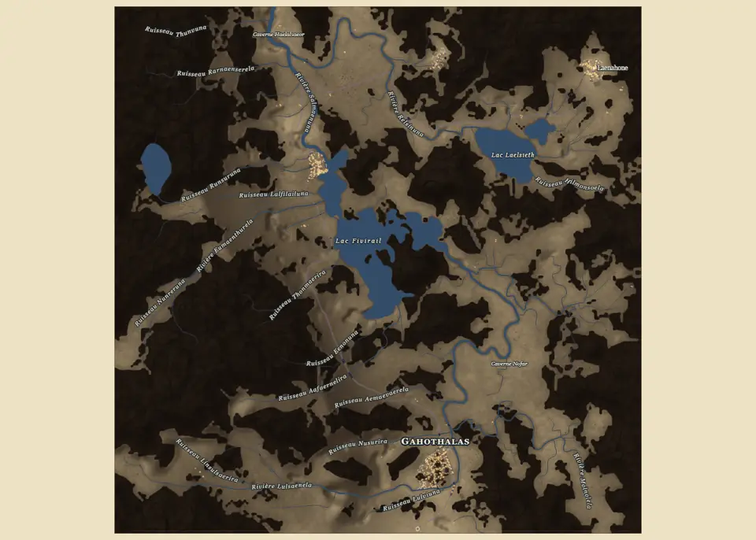
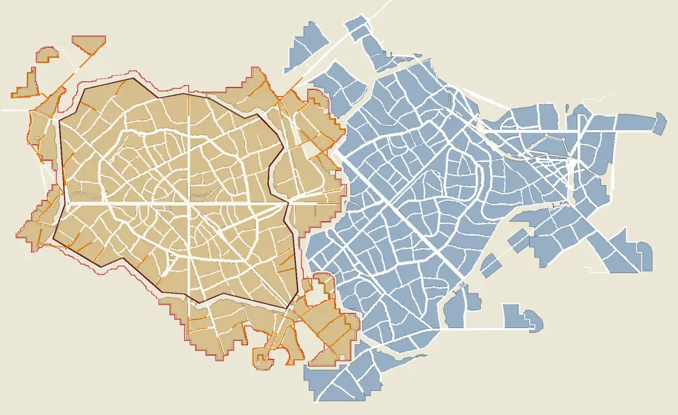
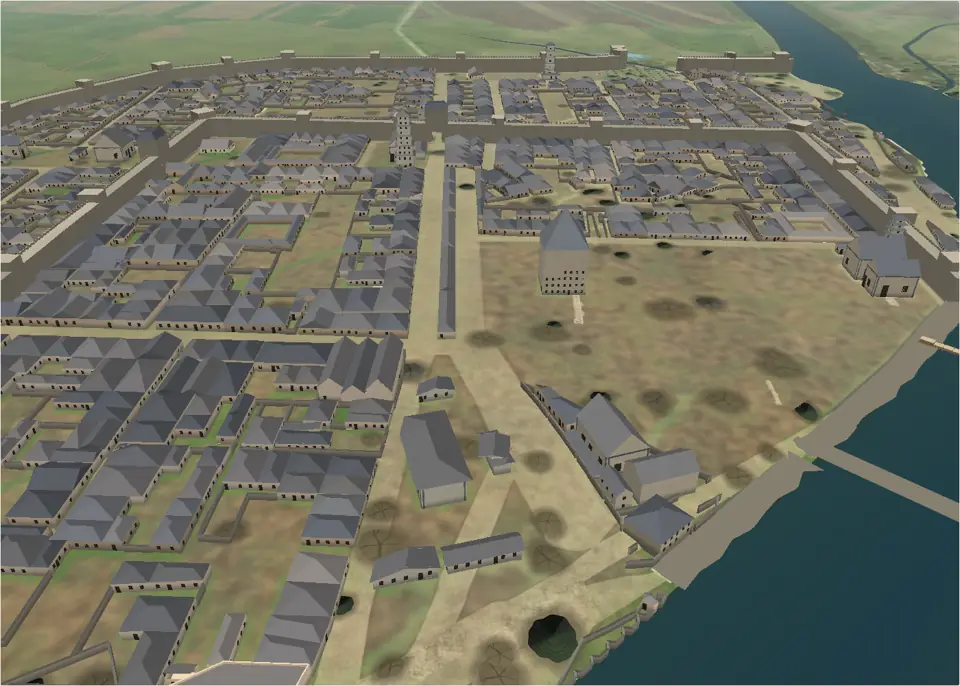
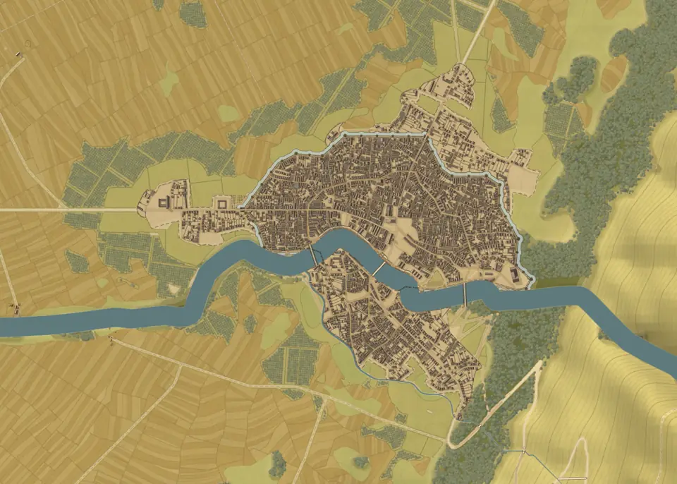
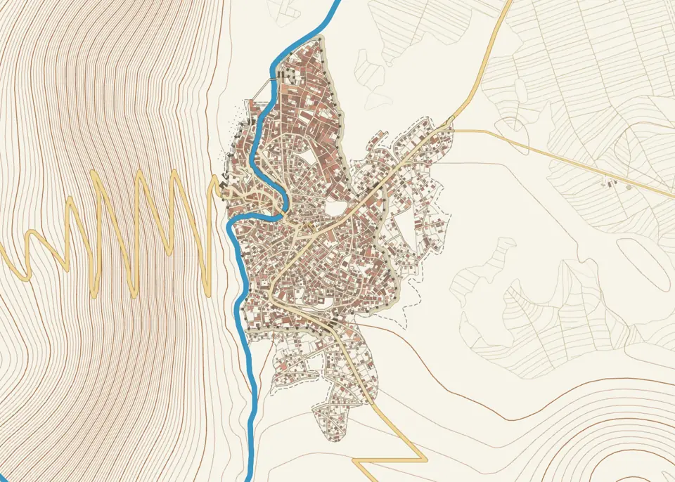
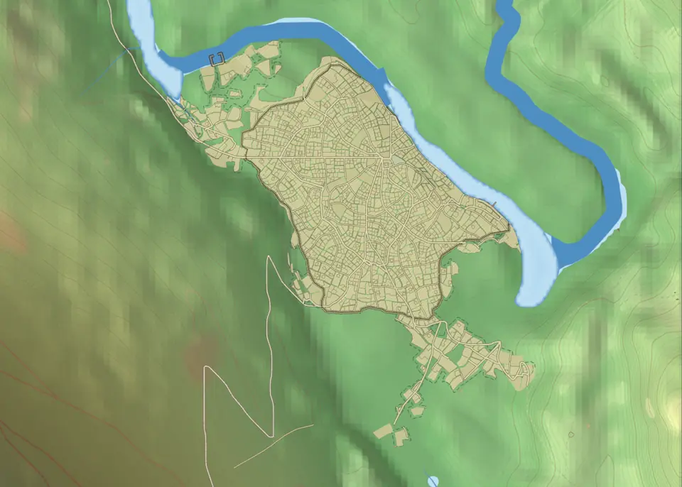

De la carte d’altitude au dernier toit.
Magna Urbis génère des paysages, des établissements et des villes pour des cartes et des jeux de table. Cet atlas suit un monde à travers chaque étape que l’application exécute : il dit ce que l’étape calcule, quelle méthode elle emploie, ce que l’on peut modifier, et où le résultat reste une approximation.
Inspiré dès l’origine par le Medieval Fantasy City Generator de Watabou. Relief neuronal distillé de Terrain Diffusion d’Alexander Goslin.
Une recette, quatre familles, un monde conservé
Comment lire l’application et cet atlas.
Un monde Magna Urbis est décrit par une recette : la graine, la taille de la carte, la source du relief et chaque réglage. La même recette sur le même moteur donne le même monde, c’est pourquoi un lien de partage ou un projet enregistré suffit à reconstruire une carte.
L’application exécute la recette sous forme d’étapes regroupées en quatre familles. La région construit le sol, ses eaux et son couvert naturel. Les établissements placent villes, villages, fermes et les routes qui les relient. Les villes se construisent une à une, de leur emprise jusqu’à leurs toits. La carte dessine le tout dans l’un des sept styles, en 2D ou en 3D. Chaque famille conserve ses produits : modifier un réglage ne relance donc que les étapes en aval, et changer l’aspect de la carte ne relance jamais la génération.
Comment les étapes sont documentées
Chaque étape de l’application a une carte dans cet atlas, sous le chapitre qui l’explique. Une carte dit ce que l’étape calcule et pourquoi, la méthode réellement employée dans le code, ses entrées et ses sorties, les réglages et leur effet visible, et où elle s’exécute. Les étapes facultatives peuvent être désactivées dans l’application ; les étapes obligatoires, non.
Relief : trois sources, une surface
Évolution procédurale du paysage, diffusion neuronale ou carte d’altitude importée.
Le relief est un champ d’altitudes signé, en mètres au-dessus du niveau de la mer, conservé à une résolution physique fixe pendant toute l’exécution. Il provient d’une seule des trois sources, et toutes les trois aboutissent à la même chaîne de finition partagée : tout ce qui vient ensuite lit donc un seul type de surface.
Relief procédural
Perlin (2002) fournit le bruit de gradient cohérent dont part cette source, et Tricard et al. (2019) le bruit phasor utilisé pour le détail orienté. La source procédurale part d’un bruit cohérent, modelé par des zones facultatives peintes (plaine, collines, montagnes, hautes montagnes). Les zones sont des masques qui orientent les opérateurs ; elles ne fixent jamais directement une altitude. Des volcans et des caldeiras tirés au sort ajoutent des rebords lobés, des brèches et des cheminées emboîtées.
Le solveur d’incision est la méthode implicite de la loi de puissance du courant de Braun et Willett (2013). Le cœur de la chaîne est une évolution du paysage bornée sur la grille régionale : chaque cycle applique un soulèvement tectonique, achemine l’eau vers l’aval, incise les chenaux selon une loi de puissance fluviale, puis détend les pentes par effondrement thermique et diffusion. Le résultat est reconstruit sur la grille fine avec une déformation de domaine, calibré sur l’amplitude de la famille de relief choisie, enrichi d’un détail en crêtes ou en bruit de phaseurs, puis d’une dernière passe d’érosion de surface. Depuis novembre, chaque opérateur de surface s’adapte à la taille de la cellule : la même recette donne donc les mêmes formes de terrain sur une carte de 5 km comme de 50 km.
Où l’on découpe la côte
Le découpage terre–mer est une étape à part entière que l’on peut déplacer le long de la chaîne : juste après le bruit initial par défaut, ou plus tard, après la détente, la calibration, le détail, l’érosion de surface ou la normalisation du niveau de référence. Quoi qu’il arrive après lui, la chaîne de finition réapplique le découpage géographique pour que le trait de côte choisi subsiste, puis l’érode.
Cartes d’altitude importées
Une carte d’altitude importée ou issue de la bibliothèque est rééchantillonnée dans le cadre, mise à l’échelle verticalement, dotée d’un niveau de référence et recadrée. Elle saute les étapes génératives mais passe par la même finition.
Étapes de ce chapitre
Source du reliefrelief-sourceChoisit l’origine des altitudes et fixe le cadre de tout le calcul : graine, largeur carrée de la carte en mètres, échelle des formes et backend de calcul.
- Quoi et pourquoi
- Choisit l’origine des altitudes et fixe le cadre de tout le calcul : graine, largeur carrée de la carte en mètres, échelle des formes et backend de calcul. Tout l’aval est déterministe à recette égale ; la source est donc la première ligne de la recette et du lien de partage.
- Méthode
- Procédural : bruit cohérent puis simulation bornée d’évolution du paysage (les étapes ci-dessous). Neuronal : modèle de diffusion en trois étages (grossier, base, décodeur) échantillonné sur une fenêtre finie. Carte d’altitude importée ou de bibliothèque : raster rééchantillonné dans le cadre. Les trois chemins aboutissent au même champ d’altitude conservé, en mètres au-dessus de la mer, et toutes les étapes suivantes lisent uniquement ce champ. Le relief ne dépend pas de la taille de la carte : l’érosion de surface, la relaxation thermique et la diffusion suivent la taille de cellule.
- Entrées et sorties
- Entrées : type de source, graine, largeur, échelle des formes, fichier éventuel. Sortie : la recette qui décide quelles étapes ci-dessous s’exécutent.
- Réglages
- Mode de source (procédural, neuronal, carte d’altitude, bibliothèque), graine, largeurs préréglées, bibliothèque et import de cartes d’altitude.
- S’exécute sur
- Simple sélection. Le relief lui-même s’exécute dans le service Rust natif, en WebAssembly, en WebGPU ou, pour la source neuronale, dans le navigateur ou dans le service Python/CUDA optionnel. Le backend fait partie de la recette : les solveurs CPU et GPU ne sont pas identiques bit à bit.
- Code
- rust/crates/terrain/src/engine.rs, web/src/v2/stageRegistry.ts
Climat de départrelief-climateFixe le climat comme condition initiale : température, son écart saisonnier, précipitations et leur variabilité.
- Quoi et pourquoi
- Fixe le climat comme condition initiale : température, son écart saisonnier, précipitations et leur variabilité. Ils parviennent au modèle neuronal avant la diffusion, puis alimentent les préréglages d’érosion climatique, le bilan hydrique des lacs, la forêt et la largeur des plages.
- Méthode
- Quatre nombres (température, écart de température, précipitations, variabilité des précipitations) sont stockés dans la recette ; un préréglage (tempéré, océanique, méditerranéen, aride, froid, tropical) les remplit et fixe des régimes d’érosion, par exemple incision tropicale ×1,8 ou aride ×0,35. Le biome régional reste un choix séparé, et désactiver la forêt ne désactive pas le climat.
- Entrées et sorties
- Entrées : un préréglage ou quatre valeurs. Sorties : entrées climatiques lues par les étapes neuronales, l’érosion, l’hydrologie et le couvert naturel.
- Réglages
- Préréglage de climat (rangée d’icônes dans le cadre supérieur de Région) et les quatre valeurs.
- S’exécute sur
- Gratuit : il ne fait que paramétrer d’autres étapes. Indisponible avec le moteur de relief classique.
- Code
- web/src/v2/stageRegistry.ts, rust/crates/terrain/src/erosion.rs
Dessin de baserelief-maskPermet à l’auteur d’imposer l’emplacement des plaines, collines, montagnes et hautes montagnes.
- Quoi et pourquoi
- Permet à l’auteur d’imposer l’emplacement des plaines, collines, montagnes et hautes montagnes. C’est une entrée interactive, pas un noyau : les zones peintes remplacent la disposition automatique, le reste de la chaîne ne change pas.
- Méthode
- Les zones peintes sont des masques d’opération, jamais des altitudes : cinq canaux sur une grille grossière de 8 à 128 cellules de côté, remplis avec rayon de pinceau et dégradé, avec historique. Quand le masque est actif, le générateur Rust de zones évalue chaque zone peinte avec son préréglage ; le sol non peint reste transparent dans l’éditeur. Les cartes de zones et d’altitude s’importent et s’exportent.
- Entrées et sorties
- Entrées : traits de pinceau, carte de zones importée. Sortie : un champ de zones servant de disposition structurelle aux étapes suivantes.
- Réglages
- Outil de croquis et pinceaux (classe de zone, taille, dégradé), gomme, historique, import et export ; la case de l’étape bascule entre disposition automatique et manuelle en conservant les zones peintes.
- S’exécute sur
- Peu coûteux : une édition de raster plus une génération de zones, dans le moteur natif ou en WebAssembly.
- Code
- rust/crates/terrain/src/terrain_zones.rs, web/src/v2/reliefPaint.ts
Grilles et tamponsrelief-gridsAlloue les deux résolutions de la simulation : une grille régionale grossière où le paysage évolue, et la surface conservée où l’on ajoute le détail.
- Quoi et pourquoi
- Alloue les deux résolutions de la simulation : une grille régionale grossière où le paysage évolue, et la surface conservée où l’on ajoute le détail. La résolution est un budget : des grilles plus fines résolvent des vallées plus étroites mais coûtent plus par cycle.
- Méthode
- Le champ conservé fait toujours 1024 par 1024 : une carte de 5 km a des échantillons de 4,88 m, une carte de 50 km de 48,83 m. Le préréglage compact simule un domaine élargi à 1,44 fois la largeur de la carte ; son côté vise une largeur de cellule (100, 65 ou 40 m pour rapide, équilibré, détaillé), arrondie au multiple de 16 supérieur et bornée à 64–384 cellules. Surrection et incision par cycle sont remises à l’échelle pour que la dose cumulée reste comparable.
- Entrées et sorties
- Entrées : largeur, échelle des formes, qualité. Sorties : dimensions régionale et de surface, tampons de travail.
- Réglages
- Résolution de sortie, qualité compacte (rapide 8 cycles, équilibré 12, détaillé 20), tailles des grilles régionale et de surface.
- S’exécute sur
- Simple allocation. Élargir la carte n’augmente pas la résolution de sortie, et aux grandes étendues le plafond de 384 cellules rend la cellule régionale plus large que la cible. Masquée pour les reliefs à fenêtre finie.
- Code
- rust/crates/terrain/src/engine.rs, rust/crates/terrain/src/erosion/pipeline.rs
Bruit initial et soulèvementrelief-noiseConstruit la surface de départ et le forçage tectonique que les cycles d’érosion vont sculpter.
- Quoi et pourquoi
- Construit la surface de départ et le forçage tectonique que les cycles d’érosion vont sculpter. Montagnes, collines, vallées, canyons, plaines et hautes montagnes diffèrent par leur motif de surrection et leur recette de bruit. C’est une forme de paysage, pas une simulation de tectonique des plaques.
- Méthode
- Octaves de bruit simplex cohérent avec déformation du domaine, h = forme + Σ a_k N(f_k (x + w)). Les régimes montagneux reçoivent un poids régional continu (sans bande plafonnée) qui multiplie la surrection le long d’un squelette de crêtes : les crêtes existent avant l’érosion et entrent dans le drainage au lieu d’être masquées par une texture tardive. Volcans et caldeiras sont tirés depuis la graine avec un bord lobé, une brèche et des évents imbriqués.
- Entrées et sorties
- Entrées : graine, famille de relief, échelle du bruit, force des crêtes. Sorties : altitudes régionales initiales et champ de surrection.
- Réglages
- Échelle du bruit régional et force des crêtes structurelles.
- S’exécute sur
- Une passe par cellule régionale dans le générateur Rust natif (des noyaux GPU existent pour le navigateur). Les formes CPU et GPU concordent statistiquement, pas bit à bit.
- Code
- rust/crates/terrain/src/generation_noise.rs, rust/crates/terrain/src/noise.rs
Formation des côtesrelief-coast-cutApplique la découpe terre/mer qui déforme le relief en îles, baies et secteurs continentaux.
- Quoi et pourquoi
- Applique la découpe terre/mer qui déforme le relief en îles, baies et secteurs continentaux. Par défaut, elle s’exécute juste après le bruit initial ; elle peut être déplacée plus loin dans la chaîne.
- Méthode
- La découpe peut se placer après la relaxation régionale, le calibrage d’amplitude, le détail ridgé, l’érosion de surface ou la normalisation du datum. Les opérations suivantes pouvant modifier le relief, l’étape de finition réapplique la découpe géographique pour conserver une côte, puis lance l’érosion côtière. Les états intermédiaires sont gardés en mémoire et invalidés à partir de la première dépendance modifiée.
- Entrées et sorties
- Entrées : altitudes, plan de côte. Sortie : altitudes déformées vers la disposition terre/mer choisie.
- Réglages
- Interrupteur de l’étape et position de la découpe dans la chaîne (réglage rapide).
- S’exécute sur
- Une passe sur la grille, en Rust natif ou sur GPU. Masquée pour les reliefs à fenêtre finie.
- Code
- rust/crates/terrain/src/coast.rs, rust/crates/terrain/src/erosion/pipeline.rs
Évolution régionalerelief-regionalLaisse rivières et pentes organiser la surface : la surrection soulève le sol, l’eau s’écoule selon la plus forte pente et creuse des vallées, les versants s’éboulent, la diffusion adoucit le reste.
- Quoi et pourquoi
- Laisse rivières et pentes organiser la surface : la surrection soulève le sol, l’eau s’écoule selon la plus forte pente et creuse des vallées, les versants s’éboulent, la diffusion adoucit le reste. Après quelques cycles, le bruit est devenu un drainage connecté avec crêtes, vallées et cônes.
- Méthode
- Chaque cycle est une suite dépendante. Surrection ; drainage Priority-Flood (Barnes et al.) depuis les sorties par altitude croissante, les seuils des bassins fermés étant creusés d’une fraction (0,1) de leur profondeur par pas pendant que les bassins se comblent de sédiments (facteur 3) ; accumulation de l’écoulement répartie entre deux voisins aval sur des facettes triangulaires (D∞, Tarboton) ; incision implicite en loi de puissance fluviale, dh/dt = U − K Aᵐ Sⁿ, résolue de l’amont vers l’aval d’après Braun et Willett, avec contribution plafonnée et réponse atténuée aux faibles pentes ; relaxation thermique au-delà de l’angle de talus ; diffusion de versant. La convergence du graphe est vérifiée et rejouée, pas supposée après un nombre fixe de relaxations.
- Entrées et sorties
- Entrées : altitudes initiales et surrection. Sorties : altitudes régionales évoluées, aire drainée et directions d’écoulement.
- Réglages
- Surrection, taux thermique et de diffusion régionaux, biome, nombre de cycles ; le préréglage de climat module l’incision hydraulique et les taux thermiques. Thermique et diffusion se désactivent séparément ; drainage et incision ne se séparent pas, car l’incision lit les données d’écoulement.
- S’exécute sur
- Domine le coût procédural, qui croît comme cycles × cellules régionales. Solveur Rust natif (Priority-Flood est dans la crate terrain) ou noyaux WGSL, dont les topologies peuvent différer. La dose d’érosion est une intensité, pas des années, et la masse sédimentaire n’est pas conservée globalement.
- Code
- rust/crates/terrain/src/erosion/pipeline.rs, rust/crates/terrain/src/priority_flood.rs, rust/crates/terrain/src/erosion.rs
Relaxation régionale finalerelief-relaxRetire les artefacts du dernier cycle d’évolution (cuvettes fraîches, marches d’une cellule) sans ajouter de surrection, pour que la reconstruction parte d’une surface stabilisée et drainable.
- Quoi et pourquoi
- Retire les artefacts du dernier cycle d’évolution (cuvettes fraîches, marches d’une cellule) sans ajouter de surrection, pour que la reconstruction parte d’une surface stabilisée et drainable.
- Méthode
- Une dernière passe de creusement des seuils et de drainage suivie d’une relaxation thermique, avec les mêmes noyaux que le cycle mais sans terme de surrection.
- Entrées et sorties
- Entrée : altitudes régionales évoluées. Sorties : altitudes régionales relaxées et drainage.
- Réglages
- Interrupteur de l’étape et quantité de creusement final des seuils.
- S’exécute sur
- Une passe supplémentaire à la résolution régionale ; négligeable devant les cycles.
- Code
- rust/crates/terrain/src/erosion/pipeline.rs
Reconstructionrelief-reconstructRééchantillonne le champ régional grossier sur la surface conservée de 1024 de côté.
- Quoi et pourquoi
- Rééchantillonne le champ régional grossier sur la surface conservée de 1024 de côté. Le choix de l’interpolant compte : une spline interpolante peut dépasser et inventer cuvettes ou crêtes, qui égareraient ensuite l’hydrologie.
- Méthode
- Soit une interpolation bicubique bornée (convolution cubique), soit une B-spline cubique positive ; le préréglage compact utilise la B-spline, dont les poids positifs ne peuvent pas dépasser. Une déformation du domaine déplace les coordonnées de lecture pour que les lignes de vallée ne suivent pas les axes de grille ; son multiplicateur règle la force.
- Entrées et sorties
- Entrée : altitudes régionales relaxées. Sortie : altitudes de surface pleine résolution.
- Réglages
- Méthode de reconstruction (défaut du moteur, bicubique borné, B-spline positive) et multiplicateur de déformation du domaine.
- S’exécute sur
- Linéaire en cellules de sortie (environ un million) ; Rust natif, fusionné avec les passes suivantes sur GPU.
- Code
- rust/crates/terrain/src/engine.rs
Calibration de l’amplituderelief-calibrateRend l’amplitude du relief prévisible : après érosion, les points les plus hauts dépendent fortement de la graine ; le champ est donc remis à l’échelle de l’amplitude de la famille de relief choisie.
- Quoi et pourquoi
- Rend l’amplitude du relief prévisible : après érosion, les points les plus hauts dépendent fortement de la graine ; le champ est donc remis à l’échelle de l’amplitude de la famille de relief choisie.
- Méthode
- Le 99e centile des altitudes est mesuré et le champ est mis à l’échelle pour égaler la cible de la famille ; un centile ignore les pics rares que suivrait un maximum. Désactivé, l’amplitude physique évoluée est conservée.
- Entrées et sorties
- Entrée : altitudes de surface. Sortie : altitudes remises à l’échelle (un facteur multiplicatif).
- Réglages
- Interrupteur de l’étape seulement ; la cible vient de la famille de relief.
- S’exécute sur
- Histogramme ou tri d’environ un million de valeurs ; négligeable.
- Code
- rust/crates/terrain/src/engine.rs
Détail ridgérelief-detailAjoute une texture rocheuse fine sur les pentes, que la grille régionale grossière ne peut pas porter.
- Quoi et pourquoi
- Ajoute une texture rocheuse fine sur les pentes, que la grille régionale grossière ne peut pas porter. Elle précède l’érosion de surface pour que l’étape suivante l’organise et l’adoucisse au lieu de laisser un bruit brut.
- Méthode
- Un terme multifractal en crêtes (1 − |n| d’un bruit cohérent, sommé sur des octaves) modulé par la pente et ajouté aux altitudes de surface. Désactivé par défaut dans le préréglage compact, actif dans le classique.
- Entrées et sorties
- Entrée : altitudes calibrées. Sortie : altitudes avec fines crêtes.
- Réglages
- Amplitude du détail dans le réglage d’érosion.
- S’exécute sur
- Une passe par cellule de surface ; négligeable.
- Code
- rust/crates/terrain/src/erosion/pipeline.rs
Érosion de surfacerelief-surfaceExécute les opérateurs d’érosion régionaux à la pleine résolution 1024² pendant quelques cycles, pour creuser de petites ravines et adoucir le détail ridgé.
- Quoi et pourquoi
- Exécute les opérateurs d’érosion régionaux à la pleine résolution 1024² pendant quelques cycles, pour creuser de petites ravines et adoucir le détail ridgé. Désactivée par défaut dans le préréglage compact, qui s’appuie sur l’étape Phasor.
- Méthode
- Routage Priority-Flood, accumulation D∞, incision implicite, passes thermique et de diffusion, avec un mode d’écoulement routé ou strict pour les dépressions et un creusement optionnel des seuils. Les taux suivent la taille de cellule : le résultat ne dépend pas de la largeur de la carte.
- Entrées et sorties
- Entrée : surface détaillée. Sortie : surface érodée et son drainage.
- Réglages
- Itérations, incision, creusement, écoulement routé ou strict, taux thermique, diffusion.
- S’exécute sur
- Linéaire en cellules de surface × cycles ; Rust natif ou GPU.
- Code
- rust/crates/terrain/src/erosion/pipeline.rs, rust/crates/terrain/src/erosion.rs
Normalisation du datumrelief-datumCale le sol le plus bas sur une altitude connue pour que le plancher terrestre soit stable d’une graine à l’autre : niveau marin, côtes et lacs sont définis relativement à lui.
- Quoi et pourquoi
- Cale le sol le plus bas sur une altitude connue pour que le plancher terrestre soit stable d’une graine à l’autre : niveau marin, côtes et lacs sont définis relativement à lui.
- Méthode
- Le 1er centile des altitudes est décalé à 1 m. Indépendamment, le plancher positif de 0,3 m pour les entrées terrestres reste toujours imposé aux étapes suivantes.
- Entrées et sorties
- Entrée : altitudes érodées. Sortie : altitudes décalées.
- Réglages
- Interrupteur de l’étape (le plancher de 0,3 m reste obligatoire).
- S’exécute sur
- Un centile et une addition ; négligeable.
- Code
- rust/crates/terrain/src/engine.rs
Détail Phasorrelief-phasorAjoute des crêtes et ravines infra-régionales dont les crêtes suivent les courbes de niveau du terrain, ce que le bruit simple ne fait pas.
- Quoi et pourquoi
- Ajoute des crêtes et ravines infra-régionales dont les crêtes suivent les courbes de niveau du terrain, ce que le bruit simple ne fait pas. Optionnel sur l’un ou l’autre préréglage, il modifie les altitudes physiques.
- Méthode
- Bruit de phase tel qu’utilisé pour l’amplification de terrain (Tricard et al. 2019 ; Grenier et al. 2024) : chaque octave somme des impulsions de Gabor jitterées, z = Σ w_j exp(i phase_j), avec des directions de porteuse selon la tangente aux courbes de niveau régionales et un profil borné de type triangle. Trois octaves au plus, rapport de longueur d’onde 3, longueur de base clamp(échelle/24, 48, 160) m ; amplitude min(0,025 λ, 0,12 pente λ), atténuée sur terrain plat, fonds de vallée et près du niveau de la mer. Les longueurs d’onde inférieures à quatre cellules de sortie sont supprimées.
- Entrées et sorties
- Entrées : altitudes de surface et pente. Sortie : altitudes plus détail.
- Réglages
- Activation et intensité du Phasor (zéro le désactive).
- S’exécute sur
- Fusionné dans la dernière passe d’empaquetage de sortie : aucune texture intermédiaire pleine taille. À 50 km, la plupart des petites octaves disparaissent sous la taille de cellule. Ce détail n’est pas un réseau de drainage physiquement évolué.
- Code
- web/src/ui/terrainGpu.ts, web/src/ui/terrainWgsl.generated.ts
Ajustement de la carte d’altituderelief-heightmap-fitAmène un raster externe dans le même cadre que le terrain généré : largeur physique en mètres, altitudes en mètres au-dessus de la mer, plancher terrestre positif.
- Quoi et pourquoi
- Amène un raster externe dans le même cadre que le terrain généré : largeur physique en mètres, altitudes en mètres au-dessus de la mer, plancher terrestre positif. C’est la seule étape de relief pour une carte importée ou de bibliothèque.
- Méthode
- Recadrage sur la fenêtre choisie, rééchantillonnage interpolé vers la grille conservée, échelle verticale et décalage de niveau, plancher terrestre imposé. Aucune érosion n’est appliquée sauf si les étapes postérieures sont activées.
- Entrées et sorties
- Entrées : image ou raster, recadrage, échelle verticale, niveau. Sortie : le champ d’altitude conservé.
- Réglages
- Outil d’ajustement (recadrage, niveau), échelle des hauteurs, traitement de la mer importée.
- S’exécute sur
- Peu coûteux, CPU seulement. Une carte de faible résolution native est seulement suréchantillonnée : aucun détail géologique n’est créé.
- Code
- web/src/v2/heightmapLibrary.ts, rust/crates/terrain/src/engine.rs
Relief neuronal
Un modèle de diffusion conditionné par le climat et par une esquisse facultative.
Le point d’entrée du relief neuronal est InfiniteDiffusion, la méthode d’Alexander Goslin, avec ses modèles Terrain Diffusion, décrits dans InfiniteDiffusion: Bridging Learned Fidelity and Procedural Utility for Open-World Terrain Generation (arXiv 2512.08309). Son idée rend un terrain appris utilisable dans un monde procédural : des fenêtres générées à la demande, cohérentes avec la graine et indépendantes de l’ordre de visite, si bien que le terrain n’a ni bord ni couture. Les modèles qu’exécute Magna Urbis sont distillés des modèles de Terrain Diffusion et suivent la méthode de cette publication ; la distillation et l’exécution dans le navigateur sont développées dans Neural Earth.
Comme Terrain Diffusion, les modèles reprennent la formulation de la diffusion de Karras et al. (2022, 2024). La source neuronale échantillonne un modèle de diffusion à trois étages entraîné sur des données d’altitude réelles. Un étage grossier à 7,68 km par cellule est conditionné par le climat (température, précipitations et leur variabilité) et par une esquisse facultative. Un étage de base l’affine à 240 m, et un décodeur l’amène à 30 m, avec une amplification facultative qui ajoute un résidu à la spline conservée. Chaque étage est échantillonné en coordonnées de tuiles globales avec un halo, de sorte que les tuiles se raccordent sans couture.
Le modèle s’exécute à trois endroits : dans le navigateur, grâce à Rust compilé en WebAssembly avec WebGPU ; dans un service Rust natif sur la même machine ; ou dans le service Python local facultatif avec CUDA. Le chapitre suivant décrit les réseaux distillés et les moteurs. Seul le terrain décodé est exposé ; les étages intermédiaires n’ont pas d’aperçu séparé.
Étapes de ce chapitre
Diffusion neuronale grossièrerelief-neural-coarsePremier de trois étages appris : il dessine, à partir du bruit, la disposition à l’échelle continentale (terre et mer, grandes chaînes) de la fenêtre finie, conditionnée par la graine, le climat et la position.
- Quoi et pourquoi
- Premier de trois étages appris : il dessine, à partir du bruit, la disposition à l’échelle continentale (terre et mer, grandes chaînes) de la fenêtre finie, conditionnée par la graine, le climat et la position.
- Méthode
- Un modèle de diffusion de la famille EDM (Karras et al.) avec échantillonnage en peu d’étapes de type modèle de cohérence (Song et al.), utilisé selon l’arrangement InfiniteDiffusion (Goslin) où les tuiles sont échantillonnées en coordonnées globales pour qu’une fenêtre puisse s’étendre sans couture. L’étage grossier travaille sur une grille basse résolution de la fenêtre.
- Entrées et sorties
- Entrées : graine, position et taille de la fenêtre, valeurs de climat, poids du modèle. Sorties : altitude grossière et latents conditionnant l’étage suivant.
- Réglages
- Modèle grossier, fidélité, échelle des terres, nombre de pas d’échantillonnage et les quatre valeurs de climat de bruit.
- S’exécute sur
- Inférence en Rust avec WebGPU dans le navigateur, ou PyTorch/CUDA dans le service Python optionnel sur :8793 ; les poids sont externes et leur chargement pèse sur le premier appel. La fenêtre est finie : aucun monde infini n’est pavé automatiquement.
- Code
- rust/crates/neural, rust/crates/neural-wasm
Diffusion neuronale de baserelief-neural-baseRaffine la disposition grossière en un terrain de base avec vallées et crêtes cohérentes à échelle intermédiaire, toujours conditionné par le résultat grossier pour ne pas redessiner les grands traits.
- Quoi et pourquoi
- Raffine la disposition grossière en un terrain de base avec vallées et crêtes cohérentes à échelle intermédiaire, toujours conditionné par le résultat grossier pour ne pas redessiner les grands traits.
- Méthode
- Un deuxième étage de diffusion conditionné par la sortie grossière échantillonnée aux coordonnées correspondantes ; les tuiles portent un halo pour que les voisines s’accordent sur leur recouvrement. Un histogramme cible à cinq classes et une échelle de relief pilotent la quantité de relief.
- Entrées et sorties
- Entrées : sortie grossière, graine, position. Sortie : altitudes à la résolution de base.
- Réglages
- Modèle de base, mode de relief, échelle ou valeur fixe, les cinq classes de l’histogramme et leurs préréglages.
- S’exécute sur
- Mêmes backends d’inférence que l’étage grossier ; le coût croît avec l’aire de la fenêtre à la résolution de base.
- Code
- rust/crates/neural, rust/crates/neural-wasm
Décodeur neuronalrelief-neural-decoderProduit les altitudes finales à l’échelle du mètre à partir du terrain de base (décodeur), ajoute du détail sous la résolution propre du modèle (amplification) et ajuste le résultat à l’étendue demandée.
- Quoi et pourquoi
- Produit les altitudes finales à l’échelle du mètre à partir du terrain de base (décodeur), ajoute du détail sous la résolution propre du modèle (amplification) et ajuste le résultat à l’étendue demandée.
- Méthode
- Le décodeur convertit les latents de base en altitudes. L’amplification échantillonne une référence sur son réseau natif de 30 m, soustrait sa base côtière et n’ajoute que le résidu à la spline conservée, avec un gain près de l’altitude zéro qui préserve le signe terre/mer ; les niveaux 1 à 6 utilisent cellule = 30 × échelle / 2^niveau, et le niveau 0 renvoie la spline conservée inchangée.
- Entrées et sorties
- Entrées : latents de base ou grille d’altitude conservée, largeur, graine. Sortie : altitudes raffinées.
- Réglages
- Modèle de décodeur et niveau de détail.
- S’exécute sur
- Navigateur (Rust et WebGPU) ou service Python/CUDA. Une branche appuyée sur le décodeur exige le monde neuronal d’origine ; les sources procédurales et importées exécutent l’amplification sans poids. Une fenêtre locale ne reçoit pas son débit amont : l’hydrologie sur une fenêtre est un contrôle de compatibilité, pas des bassins versants globalement corrects.
- Code
- rust/crates/neural, rust/crates/neural-wasm
La distillation et les moteurs d’inférence
Comment la chaîne de diffusion tourne sans Python : des réseaux plus petits ou plus courts, un plan de fenêtres fini, un moteur natif et un moteur pour le navigateur.
Le professeur est Terrain Diffusion tel que publié par Goslin (2025) : le point de contrôle xandergos/terrain-diffusion-30m, sous licence MIT, épinglé à la révision 9ef8030c. Tel que publié, il s’exécute en Python avec PyTorch et CUDA, son réseau de base compte environ 254 millions de paramètres (1 014,77 Mo de poids) et son échantillonneur grossier demande vingt évaluations par fenêtre. Magna Urbis ajoute trois contraintes : pas de Python à l’exécution, un chemin qui tourne dans un onglet de navigateur sur WebGPU, et un téléchargement acceptable pour un utilisateur. Le travail a été mené dans Neural Earth puis porté ici. Il comprend trois parties : des réseaux distillés ou raccourcis, un plan qui ne calcule que les fenêtres dont une carte finie a besoin, et deux moteurs d’inférence écrits en Rust.
La chaîne du professeur
La formulation de la diffusion est EDM (Karras et al., 2022), avec les réseaux à préservation de magnitude d’EDM2 (Karras et al., 2024). Le réseau grossier est un U-Net EDM2 à un seul niveau de 128 canaux. Il lit onze canaux (six sorties bruitées et cinq champs de conditionnement : l’altitude et quatre champs climatiques, chacun mêlé de bruit sous l’angle t = atan(bruit / signal)) et écrit six canaux sur des fenêtres de 64 × 64 cellules de 7,68 km, au pas de 48 cellules. Il est échantillonné avec le DPM-Solver++ multipas (2M) de Lu et al. (2022), sur un calendrier de Karras de σ = 80 à 0,002 (ρ = 7). Le réseau de base est un U-Net EDM2 aux niveaux de 192, 384, 576 et 768 canaux, à trois couches par bloc et avec attention dans le bloc central, conditionné par un vecteur de 58 valeurs calculé à partir des 4 × 4 cellules grossières sous chaque fenêtre. Il écrit cinq canaux (quatre latents et une altitude basse fréquence) sur des fenêtres de 64 × 64 cellules latentes de 240 m, au pas de 32, et le professeur l’échantillonne en deux étapes. Le décodeur transforme les latents en un résidu à 30 m sur des fenêtres de 512 × 512 cellules au pas de 384. Les fenêtres qui se recouvrent sont fusionnées avec la fenêtre de pondération linéaire d’origine, et les mètres sont reconstruits par la reconstruction laplacienne d’origine : le canal basse fréquence plus le résidu du décodeur.
Ce qui est distillé, et comment
| Réseau | Professeur | Élève utilisé ici | Méthode | Poids |
|---|---|---|---|---|
| Grossier | 20 évaluations du solveur, 11,20 Mo | coarse4 (par défaut), aussi coarse8, coarse2, coarse1 | Même réseau, solveur différentiable raccourci, entraîné sur les sorties finales du professeur | 11,2 Mo chacun |
| Décodeur | 111,71 Mo | Élève convolutif, largeur 64 | Régression sur les sorties du professeur, mêmes fenêtres et même fusion | 13,35 Mo |
| Base, navigateur | Environ 254 millions de paramètres, 2 étapes, 1 014,77 Mo | B75 : même architecture (253 688 037 paramètres) et même solveur | Entraîné face au professeur par un entraînement conscient de la quantification NF4 des seuls poids | 149,6 Mo |
| Base, natif | Non distillé : le réseau de base original, évalué une fois par fenêtre | 1 014,77 Mo | ||
Grossier : un solveur plus court, pas un réseau plus petit. Les élèves grossiers partent du réseau du professeur et de ses poids, et raccourcissent son échantillonneur. Le parcours DPM-Solver++ de vingt évaluations devient un parcours différentiable de N évaluations, calculé en BF16 comme en production, et les poids sont entraînés, à travers chaque évaluation, pour que le parcours court reproduise la sortie finale du parcours complet. C’est une distillation du solveur, pas une compression : chaque fichier grossier pèse environ 11,2 Mo, comme l’original. Les points de contrôle fournis sont des moyennes mobiles exponentielles (EMA) des poids : coarse4 à 50 000 pas d’entraînement (par défaut), coarse8 à 25 000, coarse2 et coarse1 à 200 000. Les notes de Neural Earth indiquent que coarse2 et coarse1 sont partis de l’EMA de coarse4, et que retirer des étapes sans réentraîner n’est pas équivalent.
Décodeur : un petit élève. Le décodeur est remplacé par un élève entraîné sur les sorties du professeur, une distillation des connaissances au sens de Hinton, Vinyals et Dean (2015). C’est un U-Net convolutif à normalisation par pixel, de largeur 64 et à quatre niveaux, avec des blocs dilatés (1, 2, 4) au centre, un sous-échantillonnage de pas 2 et deux têtes 1 × 1 en FP32 : une tête résiduelle et une dérivation linéaire des entrées. Il lit les mêmes fenêtres de 512 × 512 au pas de 384 et garde la fusion d’origine, si bien que seul le réseau change, et il s’exécute en une passe. L’entraînement est une régression en BF16 ; le script d’entraînement combine par défaut une erreur quadratique moyenne avec des termes de gradient (poids 0,05) et de log-spectre (poids 0,02), le terme spectral contrant le lissage que montre un élève entraîné à la seule erreur quadratique. Le décodeur fourni est l’EMA à 200 000 pas.
Données d’entraînement. Les cibles ont été générées par le professeur : 19 616 extraits d’entraînement et 384 de validation, les extraits de validation étant tirés de mondes distincts, et les graines 42, 101, 202, 303 et 404 réservées à l’évaluation.
Base : ce qui a échoué, et ce qui a été gardé. La base est le réseau coûteux. Des élèves convolutifs en une passe, de largeur 128 et 192 (13,3 et 30,0 millions de paramètres), entraînés à régresser directement le champ fusionné à deux étapes, exécutaient l’étage de base cinq à sept fois plus vite (sur une surface de 2048 × 2048, de 16,27 s à 2,22 s sur une RTX 4090). L’examen visuel les a rejetés : ils effaçaient les vallées fluviales et dessinaient des lignes horizontales et verticales. La base a alors été reconstruite à partir du professeur lui-même. B75 garde toute l’architecture (253 688 037 paramètres), les fenêtres de 64 cellules au pas de 32, le conditionnement à 58 valeurs et le solveur à deux étapes. Il est entraîné face au professeur par un entraînement conscient de la quantification, limité aux poids, vers le code NormalFloat à 4 bits (NF4) de Dettmers et al. (2023), avec une échelle FP32 par bloc de 512 coefficients et le gain de sortie gardé en FP32. La version publiée est l’EMA de la branche d’entraînement B à 75 000 pas. NF4 n’est qu’un format de stockage : les poids sont décodés en FP16 ou FP32 au chargement, si bien que la base calcule autant que le professeur ; seul le téléchargement diminue.
Un plan de fenêtres fini
InfiniteDiffusion génère des fenêtres à la demande pour un monde sans limite. Une carte de Magna Urbis est un carré fini : le moteur remonte donc depuis l’extrait livré à 30 m et ne calcule que ce dont il dépend : les cellules résiduelles que lit la reconstruction, avec une marge de six cellules latentes ; les fenêtres du décodeur qui les couvrent ; les cellules latentes que lisent ces fenêtres ; les fenêtres de base qui les écrivent ; puis les cellules et fenêtres grossières en dessous. Le plan régional place chaque carte à une origine fixe de la grille du monde, choisie pour que, pour toute étendue de 500 m à 200 km, toutes les dépendances tombent dans une seule fenêtre grossière. Une demande qui exigerait une seconde fenêtre grossière est refusée, pas calculée en partie. Pour une carte de 40 km (1 334 cellules de 30 m), le plan demande 4 évaluations grossières, 64 de base et 16 du décodeur, contre 16, 100 et 25 pour la même carte placée à l’origine de la référence de validation.
Le bruit gaussien est le générateur portable d’origine, un flux PCG64 avec la méthode polaire de Marsaglia, reproduit octet pour octet en Rust et adressé par la position de la fenêtre. Une fenêtre reçoit donc le même bruit quel que soit le moteur qui la calcule et l’ordre de calcul.
Le moteur natif
La crate native (rust/crates/neural) exécute la chaîne avec Burn sur wgpu, c’est-à-dire Vulkan, Metal ou DX12. Son profil est coarse4 en quatre étapes, la base originale en une évaluation par fenêtre, et le décodeur distillé. Les convolutions et les activations entre couches sont en FP16 ; les normalisations, les plongements et les scores d’attention sont en FP32. La chaîne de production tournait en BF16 ; le portage exécute ses convolutions en FP16.
Les poids sont préparés hors ligne par neural export, qui lit directement les points de contrôle zip de PyTorch et les fichiers safetensors, sans Python. Les paramètres sont d’abord arrondis en BF16, comme en production, puis chaque convolution à préservation de magnitude est repliée en une convolution ordinaire, normalize(w) · gain / √fan-in, si bien que l’exécution ne fait que des convolutions simples. Le résultat est stocké en FP16, avec des têtes de sortie en FP32. neural serve garde les trois réseaux résidents sur un fil GPU, préchauffe les noyaux une fois au démarrage et répond sur 127.0.0.1:8792 par des hauteurs FP32 petit-boutistes. neural compare confronte une sortie à une référence NumPy, sur toute la carte et sur son intérieur.
Le moteur du navigateur
La première version pour le navigateur, le 11 octobre 2026, compilait le même code Burn vers WebGPU. Elle n’a pas été branchée : trop lente, et incorrecte après l’autoréglage. Sans autoréglage, la convolution WebGPU portable de Burn est un noyau direct naïf. Deux jours plus tard, Neural Earth l’a remplacée par un runtime WebGPU direct, que Magna Urbis enveloppe désormais (rust/crates/neural-wasm). Il garde les modules de bruit, de plan, de chaîne, de conditionnement et de reconstruction de la chaîne Rust, et remplace la couche réseau par ses propres noyaux WGSL :
- des convolutions en GEMM implicite sur des activations NHWC dont les canaux sont complétés à 16 ;
- des activations stockées en FP16 quand l’appareil offre
shader-f16, en FP32 sinon, chaque noyau accumulant en FP32 ; - un ordre d’accumulation fixe, si bien que les sorties ne dépendent pas de la taille des tuiles GEMM ;
- la fusion de l’activation, de la modulation, de la normalisation par pixel, des biais, des sommes résiduelles, des bornages et des concaténations de raccourcis ;
- un travail enregistré puis soumis une fois par relecture, si bien qu’une passe avant complète est une seule soumission à la file ;
- des fenêtres de base traitées par lots de 16, et des quartets NF4 décodés une seule fois au chargement.
Son profil est coarse4, la base NF4 B75 en deux étapes (une première passe depuis σ = 80, puis une seconde rebruitée à σ = 0,35 qui lit la première passe fusionnée sur les fenêtres voisines) et le même décodeur distillé. Les fenêtres calculées vont dans un cache borné d’environ 128 Mio, que Magna Urbis vide entre deux cartes, car les fenêtres dépendent de la graine et du conditionnement.
Les poids sont téléchargés à part de l’application. Un manifeste donne la taille et l’empreinte SHA-256 de chaque fichier, et les trois fichiers totalisent 162,27 Mo : grossier 5,95 Mo, base 149,64 Mo, décodeur 6,68 Mo, le grossier et le décodeur en FP16 pesant la moitié de leurs points de contrôle FP32. Les poids vérifiés sont gardés dans le Cache Storage (magna-urbis-neural-models-v1), revérifiés à la réutilisation, puis supprimés et téléchargés de nouveau s’ils sont corrompus. Un téléchargement partiel n’est jamais enregistré. Le panneau des réglages liste, télécharge et supprime les modèles, et peut demander au navigateur un stockage persistant, que celui-ci peut refuser.
Précision et validation
Tous les chiffres ci-dessous mesurent l’accord entre modèles ou implémentations, pas l’erreur par rapport à un lieu réel.
- Portage natif. Face à la même chaîne exécutée entièrement en FP32 en Python, le portage Rust diffère de 3,95 m en moyenne. La production en BF16 diffère de cette référence FP32 de 19,8 m : le portage est donc plus proche du FP32 que la chaîne de production.
- Noyaux du navigateur. Le chemin FP32 du runtime WebGPU direct concorde avec Burn FP32 à 0,002 m près.
- Base compacte. Sur sept scènes de référence, avec coarse4 et le décodeur distillé, B75 diffère de la base BF16 originale de 24,06 m en moyenne au niveau de détail 3 et de 22,15 m au niveau 0. La variation naturelle entre les exécutions FP32 et BF16 de l’original est de 22,43 m et 21,10 m. Le candidat NF4 précédent, à 70 000 pas, obtenait 37,26 m et 36,06 m. Son runtime compact reproduit exactement la source de l’entraînement conscient de la quantification sur les 174 tenseurs.
Vitesse et taille
- Natif. Une carte de 40 km en une seconde environ sur une RTX 3090.
- Navigateur. En remplaçant Burn par le runtime direct, Neural Earth a mesuré, sous Chrome avec une RTX 3090 : une tuile non mise en cache de son visualiseur à 30 m est passée de 104 s à 2,0–2,2 s, la première tuile grossière de 6,8 s à 0,3 s, et le WebAssembly d’inférence de 67 Mo à 0,7 Mo. La version de ce runtime compilée pour Magna Urbis pèse environ 1 Mo de WebAssembly.
- Catalogue Python. Le service CUDA facultatif propose neuf fichiers de poids fournis, chacun sous 100 000 000 octets et 99 783 839 octets au total, si bien que son grossier, sa base et son décodeur se choisissent séparément.
Trois façons de l’exécuter
La V2 propose trois sources neuronales. Navigateur exécute le moteur WebGPU et exige WebGPU ; il n’y a pas de repli sur le CPU. Natif appelle neural serve. Python appelle le service CUDA sur le port 8793, seul chemin où l’on peut choisir les points de contrôle ; les moteurs navigateur et natif utilisent leur profil installé. Dans l’application de bureau, la page demande à l’application de démarrer le service neuronal à la demande quand il ne répond pas. Les chaînes native et navigateur n’utilisent pas le même réseau de base : la même recette donne donc un terrain neuronal différent sur chacune.
Finition de la surface, et le monde en dessous
Opérateurs partagés que tout relief traverse, et couche facultative du monde souterrain.
Quelle que soit la source, quatre opérateurs finissent la surface. Le raffinement fractal ajoute un détail dépendant de la pente en deçà de la taille de cellule de la source, avec son propre exposant de Hurst, sa lacunarité et ses octaves. Le conditionnement fluvial perce ou érode les dépressions pour que l’eau puisse quitter la terre. Le transport éolien déplace la matière selon un azimut pour les dunes et le loess. L’érosion côtière façonne le rivage choisi.
Monde souterrain
Le monde souterrain (« underdark ») est une couche du monde, non une étape : lorsqu’on le choisit, il creuse une fois la surface finie, avant l’hydrologie, pour en faire un monde de cavernes. Le relief devient la roche au-dessus ; le drainage devient le réseau de galeries.

Étapes de ce chapitre
Raffinement fractalrelief-refineAjoute un détail plausible sous la cellule source quand la vue zoome, pour que les gros plans ne montrent pas une surface lisse interpolée.
- Quoi et pourquoi
- Ajoute un détail plausible sous la cellule source quand la vue zoome, pour que les gros plans ne montrent pas une surface lisse interpolée. Il ne modifie jamais la source conservée utilisée par l’hydrologie.
- Méthode
- Détail brownien fractionnaire sommé sur des octaves : amplitude proportionnelle à longueur d’onde^H (exposant de Hurst), longueurs d’onde divisées par la lacunarité à partir d’une longueur de départ en cellules source. L’amplitude est modulée par la pente locale, (pente + plat)^γ : les replats restent calmes, les versants raides deviennent rugueux, avec un terme de rivage distinct.
- Entrées et sorties
- Entrées : le champ d’altitude conservé et la région de caméra. Sortie : les altitudes raffinées de cette seule région.
- Réglages
- Interrupteur, amplitude, exposant de Hurst, lacunarité, octaves, longueur de départ, termes de pente, de plat et de rivage, réinitialisation.
- S’exécute sur
- Évalué par région affichée, à la volée ; le coût suit les échantillons visibles, pas la taille de la carte.
- Code
- web/src/v2/stageRegistry.ts, rust/crates/terrain/src/engine.rs
Conditionnement fluvial a posteriorirelief-conditioningDonne au relief un drainage réellement connecté, par érosion et percement appliqués une fois la source finale.
- Quoi et pourquoi
- Donne au relief un drainage réellement connecté, par érosion et percement appliqués une fois la source finale.
- Méthode
- Un conditionneur sur le drainage routé : érosion en loi de puissance, percement des dépressions parasites, ou les deux. Profondeur et longueur de percement sont bornées pour ouvrir une cuvette sans creuser un canyon. Les préréglages de climat fixent la force par défaut (0 tempéré, 0,7 méditerranéen, 1,5 tropical). Sur un monde Underdark, l’hydrologie travaille sur la surface creusée sans ce conditionnement.
- Entrées et sorties
- Entrée : altitudes conservées. Sortie : altitudes conditionnées.
- Réglages
- Mode (érosion, percement, les deux), force, profondeur et longueur maximales de percement.
- S’exécute sur
- Rust natif, linéaire en cellules avec le solveur de drainage. Les préréglages sont des régimes artistiques, pas une évolution calibrée sur la pluie.
- Code
- rust/crates/terrain/src/vector_water/conditioning.rs, rust/crates/terrain/src/underdark.rs
Transport éolienrelief-aeolianModèle le terrain aride par le vent : érosion de type dunaire au vent et dépôt sous le vent.
- Quoi et pourquoi
- Modèle le terrain aride par le vent : érosion de type dunaire au vent et dépôt sous le vent. C’est un régime visuel, pas un modèle physique de dunes.
- Méthode
- Une passe de transport directionnel : le long de l’azimut du vent, la matière est soulevée des cellules exposées et déposée sous le vent, plafonnée par passe, et itérée. Le préréglage aride utilise 12 passes de 0,8 m au plus.
- Entrées et sorties
- Entrée : altitudes. Sortie : altitudes avec matière redistribuée par le vent.
- Réglages
- Itérations, azimut du vent, mètres transportés par passe.
- S’exécute sur
- Linéaire en cellules par passe ; le préréglage aride en est le principal utilisateur. Le préréglage froid ne simule pas de glaciers.
- Code
- rust/crates/terrain/src/erosion/pipeline.rs, rust/crates/terrain/src/erosion.rs
Finition côtièrerelief-coastsDéfinit la mer en fin de relief : directions marines et îles, distance signée au rivage (positive vers l’intérieur) et courte érosion côtière qui donne plages, falaises et criques.
- Quoi et pourquoi
- Définit la mer en fin de relief : directions marines et îles, distance signée au rivage (positive vers l’intérieur) et courte érosion côtière qui donne plages, falaises et criques.
- Méthode
- Un plan de côte en capsules (grands secteurs continentaux, îles ramifiées, rochers au large) partagé en FP32 par GPU et CPU. La distance signée module les altitudes de part et d’autre du rivage, puis des cycles côtiers appliquent incision, relaxation thermique et diffusion avec leurs propres multiplicateurs sur le masque terre/mer choisi plus haut. Zéro cycle supprime l’érosion mais garde le masque.
- Entrées et sorties
- Entrées : altitudes, réglages de côte. Sorties : altitudes avec masque marin et distance au rivage.
- Réglages
- Cycles côtiers et multiplicateurs d’incision, thermique et diffusion.
- S’exécute sur
- Un calcul de distance et quelques passes d’érosion près du rivage seulement.
- Code
- rust/crates/terrain/src/coast.rs, rust/crates/terrain/src/erosion/pipeline.rs
Eau : drainage, lacs, rivières et embouchures
Un graphe de drainage et un bilan hydrique, puis des rivières vectorielles.
Le drainage repose sur l’algorithme Priority-Flood de Barnes, Lehman et Mulla (2014). L’eau est calculée une seule fois sur la surface finie par la chaîne d’eau vectorielle en Rust. Elle commence par conditionner le relief pour que chaque cellule puisse s’écouler, en perçant des cols jusqu’à 8 m de profondeur avec des berges en forme de vallée ou en gradins. Une passe Priority-Flood donne ensuite à chaque cellule une direction vers l’aval et à chaque dépression un point de débordement.
Les lacs suivent la logique de remplissage, débordement et fusion de Barnes, Callaghan et Wickert (2021), alimentée par le bilan hydrique annuel de Turc (1954). Les dépressions sont les endroits où des lacs peuvent se former, mais seulement si le climat peut les alimenter. Pour chaque bassin fermé, la chaîne calcule un bilan hydrique à partir de la température, de l’altitude et des précipitations ; un bassin ne garde un lac que si le ruissellement peut le soutenir et si les tests de profondeur, de surface et de couverture sont réussis. Les autres sont percés ou comblés. Le réglage d’abondance des lacs déplace ces seuils.
Des rivières qui se tiennent bien
Une fois les lacs décidés, les rivières qui passent à côté d’un lac y sont captées, et les aires amont sont de nouveau sommées pour que le débit reste cohérent. Les têtes de rivière peuvent se prolonger en remontant le talweg, les éperons de moins de 150 m sont supprimés, et les rivières vectorielles reçoivent une largeur, un lit et des méandres.
L’évasement des embouchures suit la forme exponentielle des estuaires de Savenije (2005). Les embouchures sont façonnées en dernier. Une rivière s’élargit vers la mer ou un lac selon un profil exponentiel, comme le font les estuaires, sans jamais se rétrécir à nouveau, et sa surface d’eau finit au niveau de la mer sans remonter vers le large. Les grandes rivières sur des côtes douces peuvent s’ouvrir en entonnoir ou en estuaire de marée.
Étapes de ce chapitre
Rivières, lacs et litswater-hydrologyTransforme l’altitude en eau : quelles cuvettes portent des lacs, où chaque cellule s’écoule, où courent les rivières et quelle largeur elles ont, comment leurs lits entaillent le sol.
- Quoi et pourquoi
- Transforme l’altitude en eau : quelles cuvettes portent des lacs, où chaque cellule s’écoule, où courent les rivières et quelle largeur elles ont, comment leurs lits entaillent le sol. Établissements, routes et rendu reposent sur cette définition unique de l’eau.
- Méthode
- Le conditionnement perce les cuvettes parasites (profondeur par défaut 8 m) avec des berges en coupe de vallée ou en marche. Un drainage Priority-Flood (D8) est suivi d’un bilan hydrique des dépressions fermées : Tz = T − 0,0065 z, L = max(60 ; 300 + 25 Tz + 0,05 Tz³), ET = P / √(0,9 + P²/L²), ruissellement r = max(P − ET ; 0,02 P ; 0,5). Chaque dépression est classée débordante ou fermée (Fill–Spill–Merge, Barnes et al.) ; les bassins fermés restent des lacs si les tests de profondeur, d’aire et de couverture passent, sinon ils sont percés ou comblés, au prorata du réglage d’abondance des lacs (0 à 2, défaut 0,8). Les rives des lacs suivent la courbe de profondeur, et une cellule de rivière voisine d’un lac s’y jette, sauf sa propre sortie, avec re-sommation des aires amont. Les sources peuvent remonter le thalweg, là où le sol monte d’au moins 3 % des deux côtés en deux cellules. Les rivières de moins de 150 m jusqu’à une confluence, la mer ou un lac sont supprimées. Les embouchures s’élargissent de façon monotone vers l’eau (exponentielle, d’après Savenije), selon le débit et la pente des berges, sur au plus la moitié de la distance à l’embouchure voisine ; la surface d’une embouchure marine finit à 0 m et le lit s’ouvre vers la mer ; les grandes embouchures peuvent devenir en entonnoir ou à marée sur côte douce.
- Entrées et sorties
- Entrées : altitudes conservées, niveau de la mer, température et pluie, options d’hydrologie. Sorties : surfaces d’eau (lacs, rivières, mer), graphe de drainage, largeurs, masque d’obstacle conservateur pour le routage, altitudes de lits éventuellement creusés.
- Réglages
- Le groupe hydrologie : moteur, rivière principale, abondance des lacs, sources, largeur et méandres, forme des berges, creusement des lits ; l’interrupteur de l’étape (désactivée, les altitudes restent intactes).
- S’exécute sur
- Chaîne d’eau vectorielle Rust native (crate terrain, point d’accès /terrain/water) ; plus aucun travail de relief ou d’eau ne reste dans des chemins TypeScript seuls. Le masque d’obstacle est volontairement plus large que la berge dessinée : il sert à la recherche de chemin, pas au dessin.
- Code
- rust/crates/terrain/src/vector_water/balance.rs, rust/crates/terrain/src/vector_water/lake.rs, rust/crates/terrain/src/vector_water/rivers.rs
Climat et couvert naturel
Forêts, clairières et plages à partir du climat, du relief et de l’eau.
Le climat entré avec le relief (température moyenne, son amplitude saisonnière, précipitations et leur variabilité) est réutilisé pour le couvert naturel. La densité forestière suit l’humidité, la température et la pente ; les berges et les plages ont leurs propres règles, et la largeur des plages suit le climat. Le champ forestier est un produit de la région : les établissements le défrichent, et la carte le dessine sous forme de symboles, de pinceaux peints ou de canopée procédurale selon le style.
Les saisons ne changent pas le monde généré. Elles sont appliquées au moment du rendu à partir d’un calendrier de onze zones climatiques, qui fixe pour chaque moment de l’année la teinte de l’herbe, les feuilles, la couverture de neige, la glace des rivières et des lacs et la banquise (voir le chapitre sur la carte).
Étapes de ce chapitre
Couvert naturelcover-climateEstime ce qui pousse où d’après le climat de départ, la forme du sol et l’eau, pour que forêts, clairières et roche nue suivent vallées, pentes et altitude plutôt que des taches aléatoires.
- Quoi et pourquoi
- Estime ce qui pousse où d’après le climat de départ, la forme du sol et l’eau, pour que forêts, clairières et roche nue suivent vallées, pentes et altitude plutôt que des taches aléatoires.
- Méthode
- Température corrigée de l’altitude, pluie et position topographique servent de proxys de biome et d’humidité. Un champ de contrôle en coordonnées monde stocke couverture, hauteur potentielle, part de conifères et tonalité ou perturbation ; la densité est transformée par c_D = 1 − (1 − c)^D. Les galeries riveraines suivent les berges visibles, les centres d’arbres évitent l’eau affichée et le climat règle la largeur des plages. Les coefficients sont des politiques visuelles bornées, pas une succession écologique.
- Entrées et sorties
- Entrées : altitudes, pente, surfaces d’eau, climat. Sortie : champ de contrôle de forêt et de couverture utilisé par le rendu et l’occupation du sol.
- Réglages
- Forêt activée ou non, densité, clairières.
- S’exécute sur
- Passes raster peu coûteuses dans la crate terrain native ; les arbres sont dessinés en instances de près et moyennés en matériau au loin.
- Code
- rust/crates/terrain/src/forest.rs, rust/crates/terrain/src/forest_beach.rs, rust/crates/terrain/src/forest_bank.rs
Établissements et campagne
Où vont les lieux, quelle est leur taille, et ce qui les entoure.
Les lieux sont choisis sur la région finie. Chaque cellule sèche reçoit un score de site (eau, pente, côte, franchissements de rivière, défense), et les lieux sont retenus de façon gloutonne avec un espacement minimal, chacun réservant une emprise urbaine. On peut demander un nombre de lieux tirés d’une loi de taille, ou donner une liste explicite ; un lieu de la liste qui tombe dans l’eau est déplacé vers le site sec convenable le plus proche, avec un avertissement, de sorte qu’une liste est toujours respectée.
La règle des tailles est la loi rang-taille de Zipf (1949). Les tailles suivent une loi rang-taille : le lieu de rang r compte la population du plus grand divisée par rq, jusqu’à un minimum. Le nombre de rangs dépend du nombre de lieux que peut porter la terre utilisable.
La campagne
Les fermes sont placées à portée des terres cultivables de leur lieu parent, avec quelques fermes isolées plus loin. Chacune prend un type de ferme propre à sa culture, de la ferme autrichienne à quatre ailes à la longère bretonne, à la masseria des Pouilles, à la minka japonaise ou au kraal d’Afrique australe, avec son propre plan au sol et son propre volume. Les terres cultivées suivent la population et restent à distance de marche des paysans. Les hameaux et les villages reçoivent une chapelle juste à l’extérieur, et des oratoires de bord de route marquent les carrefours. Les petits lieux sont construits en arrière-plan après une exécution.
Lieux reculés
Des sites rares sont choisis selon leur situation : sommets, rochers, corniches, gorges, îlots, forêt profonde ou îles de marais. Leur accès est un escalier de falaise, des marches taillées, une chaussée, un pont de cordes, un tunnel ou un sentier, et une ligne d’accès qui rejoint une route s’arrête sur elle au lieu de laisser un éperon.
Étapes de ce chapitre
Sites et réserves urbainessettle-sitesChoisit des emplacements secs et constructibles pour les lieux et réserve la terre dont une population donnée aura besoin, puis ajoute la campagne autour : fermes, chapelles, calvaires et rares lieux isolés.
- Quoi et pourquoi
- Choisit des emplacements secs et constructibles pour les lieux et réserve la terre dont une population donnée aura besoin, puis ajoute la campagne autour : fermes, chapelles, calvaires et rares lieux isolés.
- Méthode
- Les cellules sèches sont notées selon pente, accès à l’eau douce, rivage, défense, préférences culturelles (pondération logarithmique : une préférence ×3 ajoute environ 0,55, un poids ×0 environ −1,96) et type de site ; la sélection gloutonne garde un espacement minimal et découpe les réserves urbaines. Les demandes suivent une liste de type Zipf ou une liste explicite ; une position humide refusée est déplacée vers un site sec forcé avec un avertissement, et une liste explicite place toujours tous les établissements demandés. Les fermes se tiennent dans la portée agricole de leur lieu parent, plus quelques-unes isolées ; type, plan et volumétrie viennent de la culture (40 types de fermes). Hameaux et villages reçoivent une chapelle juste à l’extérieur, des calvaires jalonnent les carrefours et la surface cultivée suit la population. Les lieux isolés (sommet, rocher, corniche, gorge, îlot, forêt profonde, île de marais) sont rares et reçoivent un accès : escalier, marches taillées, chaussée, pont de corde, tunnel ou sentier. Péages, bacs, auberges et postes-frontières sont lus sur le réseau terminé.
- Entrées et sorties
- Entrées : relief, eau, climat, culture et spécifications des lieux. Sorties : établissements placés avec coordonnées, classe, population et réserve, plus objets de campagne et lieux isolés.
- Réglages
- Nombre de lieux et culture principale, nom, type de site et position du lieu principal, poids des types de site, lieux isolés, construction en arrière-plan des petits lieux (population par défaut 500).
- S’exécute sur
- Balayage de grille et notation en Rust natif ; rapide comparé au relief. Un site n’est pas une économie : un site riverain n’est pas automatiquement un port navigable.
- Code
- rust/crates/core/src/settlements/placement.rs, rust/crates/core/src/settlements/countryside.rs, rust/crates/core/src/settlements/remote.rs
Hiérarchie des lieuxsettle-hierarchyDonne à chaque site placé une population et un rang d’importance, qui pilotent ensuite routes, demande du programme et taille de la ville.
- Quoi et pourquoi
- Donne à chaque site placé une population et un rang d’importance, qui pilotent ensuite routes, demande du programme et taille de la ville.
- Méthode
- Une loi rang-taille : le rang r porte la population principale divisée par r^q, jusqu’à une population minimale, avec autant de rangs que la densité de lieux sur la terre utilisable le permet. Des bandes de classes démographiques partagées donnent la classe de chaque taille. Cette loi est une commande de distribution ; le moteur ne montre pas qu’un comportement de Zipf émerge d’échanges.
- Entrées et sorties
- Entrées : sites placés, terre utilisable. Sorties : population, classe et rang par établissement.
- Réglages
- Population du lieu principal, mode et distribution de placement, exposant de Zipf, population minimale, dispersion des populations, effectifs par classe.
- S’exécute sur
- Négligeable ; Rust natif.
- Code
- rust/crates/core/src/settlements/demographics.rs, rust/crates/core/src/settlements/demographic_classes.json
Routes régionales
Quels lieux relier, puis comment une route traverse réellement le terrain.
Les routes se construisent en deux temps : décider quels lieux relier, puis trouver des tracés physiques. Les liaisons candidates forment un graphe de Delaunay des lieux, réduit à un arbre couvrant minimal, auquel s’ajoutent des raccourcis là où l’arbre impose un long détour.
Le tracé suit Galin, Peytavie, Maréchal et Guérin (2010) : un chemin de moindre coût sur le terrain avec un jeu étendu de déplacements. Chaque liaison est ensuite acheminée par une recherche de moindre coût sur le terrain. Un pas peut aller vers l’un de 24 voisins (les 8 cellules adjacentes, les mouvements de cavalier et des mouvements (1, 3) plus longs), et l’état de la recherche inclut le cap d’arrivée : virages, pentes et franchissements de rivière ont donc tous un prix. Les trajets les plus importants sont acheminés en premier. Réutiliser une route existante coûte moins cher que d’en construire une, et les cellules juste à côté d’une route coûtent plus cher que la route elle-même, si bien que les itinéraires partagent un tronc commun ou gardent une distance nette.
Tous les tracés sont écrits dans un seul graphe dont les sommets sont des cellules de la grille ancrées sur des lieux ou des sorties de carte. Les croisements deviennent des carrefours, les petits triangles perdent leur plus long côté, et les chaînes de sommets de degré deux deviennent des liaisons qui prennent la classe du trajet le plus important qui les emprunte. Le revêtement suit le niveau de développement et la culture. Péages, bacs, auberges et postes-frontières sont lus dans le réseau fini.
Étapes de ce chapitre
Routes régionalessettle-roadsRelie les lieux par des routes physiques.
- Quoi et pourquoi
- Relie les lieux par des routes physiques. Le graphe de demande dit quels lieux relier ; la recherche de moindre coût trouve où chaque route peut réellement passer sur le terrain.
- Méthode
- Graphe de demande : triangulation de Delaunay des lieux, son arbre couvrant minimal, plus des raccourcis là où l’arbre fait un détour. Routage : recherche de moindre coût à 24 mouvements (les 8 voisins, les mouvements du cavalier et les mouvements (1,3)) dont l’état est une cellule plus la direction d’arrivée ; les virages sont tarifés et plafonnés par classe, les liaisons sont routées de la plus importante à la moins importante, et la réutilisation est tarifée par mouvement : les cellules voisines d’une route coûtent plus que la route, si bien que les tracés se partagent ou s’écartent. Tous les chemins vont dans un seul graphe dont les sommets sont des cellules de grille rattachées aux lieux ou aux sorties de carte : les croisements reçoivent une jonction, les petits triangles perdent leur plus long côté et les chaînes de degré 2 deviennent des liens de la classe de la liaison la plus importante. La surface suit le niveau de développement et la culture. Les lignes d’accès des lieux isolés sont transmises au routeur. À l’affichage, pistes et sentiers restent lisibles sous le couvert tandis que routes de campagne et au-delà dégagent un couloir, en 2D et en 3D.
- Entrées et sorties
- Entrées : hiérarchie des lieux, terrain, masque d’obstacle d’eau, profil routier de la culture, lignes d’accès isolées. Sortie : un graphe routier fusionné avec classes, jonctions, ponts et gués, transmis aux étapes de ville comme contexte.
- Réglages
- Groupe routes régionales : niveau de densité, surface, seuils de classes et pente ; l’interrupteur de l’étape.
- S’exécute sur
- Rust natif ; le coût suit la taille de la grille et le nombre de liaisons, sur un espace d’états cellules × directions. Un coût faible n’est pas une étude de terrassement ou de trafic.
- Code
- rust/crates/core/src/settlements/roads/search.rs, rust/crates/core/src/settlements/roads/network.rs, rust/crates/core/src/settlements/nodes.rs
Le plan de la ville
Emprise, macroplan, rues et quartiers, puis élagage.
Une ville est construite par le moteur Rust lorsqu’on la sélectionne, une à la fois ou toutes ensemble. La chaîne lit la région, le graphe routier et la culture du lieu.
Genre et emprise
Le genre de la ville (d’un bâtiment isolé ou d’une ruine jusqu’à une métropole) suit sa population, sa culture, son site et sa forme d’établissement. Son emprise dépense un budget de terrain sur une trame bornée avec un champ d’arrivée anisotrope, si bien que les villes s’étirent le long des vallées, des routes et des rivages. Un relevé du terrain fixe la pente que le plan peut accepter avant le premier tracé, de sorte que les villes de montagne grimpent au lieu d’échouer.
Villes voisines
Les villes sont générées dans un ordre fixe, de la plus grande à la plus petite. Chaque ville reçoit les revendications des villes antérieures proches, les terres qu’elles occupent et leurs rues de bordure : elle évite ces terres, rejoint ces rues, déplace son centre si nécessaire et avertit lorsque la terre vient à manquer.

Macroplan, rues et quartiers
Le macroplan est d’abord de la géographie : il garde les couloirs routiers régionaux, partitionne la terre ferme, place les ports sur des fronts d’eau enracinés en terrain sec, et dispose remparts, portes et phases culturelles (noyau, couronne, faubourgs).
Le guidage des rues par un champ de directions vient de Chen, Esch, Wonka, Müller et Zhang (2008), dans la chaîne de ville procédurale introduite par Parish et Müller (2001). Les rues sont découpées récursivement dans chaque quartier, guidées par un champ de directions, et acheminées localement autour des obstacles. Les quartiers sont calculés en parallèle avec un flux aléatoire chacun, de sorte que le résultat ne dépend pas du nombre de fils d’exécution. Les rues ne reposent jamais sur l’eau : un tronçon mouillé devient un tablier de pont ou s’arrête avant la berge.
Les fortifications suivent la culture : murailles avec tours, portes, bastions et fossés, palissades ou haies. Une muraille peut prolonger une plus ancienne, les châteaux prennent les buttes, et les villes fortifiées sont remplies jusqu’à la rue d’enceinte. Les sources à l’intérieur d’une ville reçoivent un bâtiment hydraulique choisi par sa culture, et certaines cultures ajoutent des quartiers informels en bordure.
Élagage
Le premier plan est généreux. L’élagage lance une sonde peu coûteuse du parcellaire, transforme les îlots qui resteraient vides en champs ou en terrain libre et taille les ruelles qui les desservaient, jusqu’à ce que plus rien ne change (huit passes au plus), puis lance une passe des portes après les ponts. Les rues de berge isolées, les triangles de carrefour et les tracés doublés sont supprimés.
Étapes de ce chapitre
Compositioncity-compositionDécide de la forme générale d’une ville avant l’existence des rues : quel genre d’établissement c’est, la terre qu’il couvre, où il peut croître, où se placent port et remparts, et comment il s’insère près d’autres villes.
- Quoi et pourquoi
- Décide de la forme générale d’une ville avant l’existence des rues : quel genre d’établissement c’est, la terre qu’il couvre, où il peut croître, où se placent port et remparts, et comment il s’insère près d’autres villes.
- Méthode
- Le genre (bâtiment isolé ou ruine, hameau, village, bourg, ville, métropole) est résolu d’après population, culture, site et forme d’établissement. L’emprise dépense un budget de terre sur un raster d’au plus 192 × 192 cellules avec un champ d’arrivée anisotrope ; un relevé du terrain choisit un niveau de relaxation de pente avant la première disposition. Le macroplan place la géographie d’abord : couloirs régionaux conservés, terre sèche partitionnée, ports ne gardant que les composantes de front d’eau enracinées sur terre sèche. Viennent ensuite les phases culturelles (noyau, anneau, faubourg). Les villes se génèrent dans un ordre canonique (population décroissante, puis clé) ; chacune reçoit les revendications de terre et de rues de bord des villes proches déjà faites, évite leur terre, rejoint leurs rues, déplace son centre et avertit si la terre manque ; une position explicite est acceptée partout où c’est sec. La densité suit les phases par défaut ou un gradient (poids 0,5 à la frontière d’une phase, décroissant jusqu’à 0 à une distance de bande, jamais à travers une muraille).
- Entrées et sorties
- Entrées : population, culture, terrain, eau, routes régionales, revendications des villes voisines. Sorties : emprise, secteurs du macroplan, géométrie du port et des enceintes.
- Réglages
- Étalement, remparts, douves, château, cathédrale, palais, monastères, port, arène, activités, faubourgs, culture et mode de densité par zone.
- S’exécute sur
- Rust natif sur rasters bornés ; peu coûteux devant l’étape des quartiers.
- Code
- rust/crates/core/src/urban/kinds.rs, rust/crates/core/src/urban/footprint.rs, rust/crates/core/src/urban/macroplan.rs, rust/crates/core/src/urban/neighbours.rs
Routes et rues urbainescity-roadsConstruit le réseau de rues local et ses ponts.
- Quoi et pourquoi
- Construit le réseau de rues local et ses ponts. Il est calculé avec les quartiers par un seul appel de disposition, et s’applique à tous les lieux ou au sous-ensemble coché dans la liste.
- Méthode
- Un champ de guidage dérivé des accès régionaux et de la culture oriente des coupes récursives de rues ; chaque coupe devient un ruban métrique de largeur en mètres. Les rues sont routées localement sur la surface physique par un coût anisotrope avec inondation d’accessibilité et mémoire des réponses (d’après Galin et al.). Le réseau planaire est nettoyé, les rues de berge sont raccordées et les ponts sont à pente contrôlée. Les rues ne se posent jamais sur l’eau : un tronçon mouillé devient un tablier ou est coupé avant la berge. L’élagage des routes retire les rues de berge isolées, les triangles de jonction et les tracés doublés. La fortification (muraille, palissade ou haie avec tours, portes, bastions et fossé) et les châteaux sur les buttes complètent le réseau, et les villes murées sont remplies jusqu’à la rue de rempart.
- Entrées et sorties
- Entrées : emprise, macroplan, culture, terrain, franchissements régionaux. Sorties : rubans de rues avec rôles, réseau planaire, ponts et quais, enceintes.
- Réglages
- Section rues urbaines : tissu et recette de rues, largeurs, pentes, options de ponts.
- S’exécute sur
- Rust natif ; des grilles spatiales d’arêtes ne testent que les arêtes proches, et les quartiers tournent en parallèle avec un flux aléatoire dérivé chacun : le nombre de fils ne change jamais le résultat. Exige le moteur urbain Rust.
- Code
- rust/crates/core/src/urban/network.rs, rust/crates/core/src/urban/routing.rs, rust/crates/core/src/urban/fortification.rs
Quartiers et îlotscity-quartersFaçonne les quartiers, chacun gardant sa recette culturelle et sa phase (européen organique, bastide, médina, grilles chinoise ou japonaise, cultures communales, de campement et fantasy), et les subdivise en îlots entre les rues.
- Quoi et pourquoi
- Façonne les quartiers, chacun gardant sa recette culturelle et sa phase (européen organique, bastide, médina, grilles chinoise ou japonaise, cultures communales, de campement et fantasy), et les subdivise en îlots entre les rues.
- Méthode
- Calculés dans le même appel de disposition que les rues : chaque quartier fait ses coupes récursives en parallèle depuis son propre flux aléatoire dérivé et les résultats sont fusionnés dans l’ordre d’entrée. Les îlots sont les faces entre rues ; une desserte adaptative ajoute des accès bornés quand un îlot est trop profond pour sa recette. Les sources reçoivent un bâtiment d’eau choisi par la culture, et les quartiers de taudis (bidonville, berge, gecekondu, ferraille) sont ajoutés en dernier.
- Entrées et sorties
- Entrées : emprise, macroplan, culture, terrain. Sorties : quartiers, îlots avec trous, quais.
- Réglages
- Culture et mélange de phases par quartier, partagés avec la section des rues.
- S’exécute sur
- Rust natif, étape dominante de la ville : environ 80 % du temps de génération. À 8 fils en profil rapide, une ville de 10 k habitants prend 2,7 s, 100 k 13,5 s et 1 M environ 138 s (contre environ 9 minutes).
- Code
- rust/crates/core/src/urban/quarters.rs, rust/crates/core/src/urban/shanty.rs, rust/crates/core/src/urban/springs.rs
Retrait des îlots non bâtiscity-trimRetire la terre où personne ne construit.
- Quoi et pourquoi
- Retire la terre où personne ne construit. L’emprise est dimensionnée par un budget de terre alors que le programme cesse de placer des bâtiments dès que ménages et services sont couverts : sans retrait, îlots et ruelles qui les desservent resteraient vides. C’est un palliatif a posteriori : la croissance par accrétion n’est pas implémentée.
- Méthode
- Le retrait s’exécute sur un cadastre sonde (une seule allocation). Tout îlot resté sans bâtiment devient terre ouverte ou champs, et les ruelles qui ne desservent que de tels îlots sont élaguées, comme les rues de berge isolées, les triangles de jonction et les tracés doublés. La passe se répète jusqu’à un point fixe (8 passes au plus), puis une passe de portes après les ponts (4 au plus). Une seconde passe ne s’exécute que si une signature du plan a changé. Ponts, quais et connexions de portes restent.
- Entrées et sorties
- Entrées : quartiers disposés, programme. Sorties : disposition élaguée avec terre ouverte et réseau réduit.
- Réglages
- Interrupteur de l’étape ; la densité du programme règle indirectement ce qui reste.
- S’exécute sur
- Rust natif. Une mémoïsation adressée par contenu, interne à une requête, évite de recalculer des découpes d’îlots identiques. Les résultats de sonde sont mis en cache.
- Code
- rust/crates/core/src/urban/trim.rs, rust/crates/core/src/urban/probe_cache.rs
Parcelles et programme
Qui possède quelle bande de front de rue, et à quoi sert chaque lot.
Les opérateurs de parcellisation suivent Vanegas, Kelly, Weber et al. (2012). Chaque îlot est divisé en parcelles qui donnent sur une rue, avec quatre opérateurs de découpe choisis par la culture (bandes, îlots périmétriques, cours, enclos) et des variantes pour les villes organiques, les camps, les ruines et les monuments. Une parcelle doit toucher un segment d’accès sur une longueur réelle et contenir du terrain constructible ; les cellules en trop sont fusionnées dans les voisines occupées. Les identifiants de parcelle survivent au nettoyage, de sorte que les modifications tiennent.
Le programme attribue ensuite les usages. La demande provient de la population et des tables de rôles de la culture : les édifices marquants et les grands programmes réservent d’abord des îlots entiers, puis les métiers et les boutiques prennent les lots de rue, puis l’habitat, et les restes deviennent jardins et cours. La taille des ménages est une donnée de culture, non une constante. Pas plus de 3 % du plan ne peut transformer des îlots d’habitat en communs, parcs ou cimetières.
Une grande ville produit beaucoup de données. Les parcelles peuvent être renvoyées en JSON ou dans un paquet binaire compact ; pour une ville d’un million d’habitants, le paquet pèse 151 Mo contre 536 Mo de JSON.
Étapes de ce chapitre
Parcellescity-parcelsDécoupe chaque îlot en lots qu’une rue dessert et qu’un bâtiment peut occuper.
- Quoi et pourquoi
- Découpe chaque îlot en lots qu’une rue dessert et qu’un bâtiment peut occuper. Une parcelle exige un accès et la place du plus petit bâtiment compatible : le cadastre est donc construit en tenant compte des dimensions d’admission de l’architecture.
- Méthode
- Quatre opérateurs produisent des partitions à front de rue : bandes de façade, coupes orientées, territoires de façade en concurrence (par distance, pas un squelette droit) et subdivision organique, dans la tradition de la subdivision contrainte par la façade (Vanegas et al.). Des variantes existent pour cours, campements, ruines et monuments. Le contact avec la rue est un intervalle mesuré, réuni sur les morceaux successifs ; les voisines viennent d’un index spatial et d’un vrai recouvrement colinéaire. L’union des parcelles doit égaler l’îlot parent sans recouvrement, et les identifiants de parcelles survivent au rangement. L’étape de programme consolide ensuite les cellules libres en propriétés occupées. La réponse est en JSON ou en paquet binaire magna-city-parcels v1 (une ville de 1 M : 536 Mo en JSON, 151 Mo en paquet).
- Entrées et sorties
- Entrées : îlots avec trous, réservations, recette locale. Sorties : parcelles avec famille (façade, compacte, cour, collective, terre héritée), contacts et occupation, en JSON ou en paquet binaire.
- Réglages
- Section parcelles : opérateur, mélange de familles et modules par culture, pression rural-urbain.
- S’exécute sur
- Rust natif ; la découpe en lots est mémoïsée par îlot et parallèle entre îlots. Un paquet de parcelles transfère environ 3,5 fois moins que le JSON.
- Code
- rust/crates/core/src/urban/parcels.rs, rust/crates/core/src/urban/parcel_pack.rs, rust/crates/core/src/urban/programme_lots.rs
Programmecity-programmeDécide à quoi sert chaque îlot et chaque lot : logement, commerces, artisanat, marchés, institutions, stockage, jardins.
- Quoi et pourquoi
- Décide à quoi sert chaque îlot et chaque lot : logement, commerces, artisanat, marchés, institutions, stockage, jardins. La demande est énoncée d’abord, puis réservée et allouée, puis la capacité réellement bâtie est comptée.
- Méthode
- La demande par rôle vient de la population, du rôle du lieu, des ressources, de la culture et de la période (catalogue de services et table des rôles). Monuments et grands programmes réservent d’abord des îlots entiers, puis les métiers prennent des parcelles, puis les commerces, puis le logement ; le reste devient jardin ou cour, et aucun îlot de logement ne devient terrain commun, parc ou cimetière au-delà de 3 % du plan. La taille des ménages est une donnée de culture : personnes par unité domestique, surface par ménage et plafond par parcelle sont déclarés par famille de culture (par exemple 4,5 personnes pour les familles européennes et 7 pour les islamiques), 4,5 ne servant que de repli quand une famille ne déclare rien. Les manques sont rapportés en déficit réalisé et déficit foncier.
- Entrées et sorties
- Entrées : lots, données du lieu, catalogue de cultures et de services. Sorties : rôle par lot, diagnostics de demande et de capacité, îlots réservés.
- Réglages
- Section programme : rôle du lieu, intention, ressources, budget de densité et surcharges.
- S’exécute sur
- Rust natif, quasi linéaire en lots avec un index spatial. Les refus architecturaux laissent une demande réellement insatisfaite.
- Code
- rust/crates/core/src/urban/programme.rs, rust/crates/core/src/urban/roles.rs, rust/crates/core/src/urban/services.json
Bâtiments et leurs formes
Le bâtiment affiché est la silhouette planifiée, élevée.
Les sites de bâtiment sont des intentions de placement neutres, diffusées par le moteur sous forme de lignes typées. L’aperçu d’occupation de chaque lot (un corps sur rue, une aile arrière, une aile de cour, une nef, une tour) est élevé pièce par pièce par l’étape de volumétrie : chaque pièce reçoit son propre nombre d’étages, sa hauteur d’égout et son toit. Ce que l’on voit sur la carte est donc la silhouette voulue par le plan, et non une maison posée dans un lot.
Les étages suivent la fourchette de la tradition de construction de la culture. Les styles modernes ajoutent une échelle de population : des tours apparaissent à partir d’environ 50 000 habitants, les immeubles de style haussmannien gardent cinq à sept niveaux.
Le moteur de formes
Les maisons détaillées proviennent d’un moteur de formes qui compose des masses étiquetées en un plan (barre, L, T, cour, croix ou H) avec des extras comme des appentis, porches, bow-windows, tourelles, cheminées et lucarnes, et les couvre de toits composés : noues, croupes, demi-croupes, toits à la Mansart et mansardes. Les bâtiments singuliers (temples, mosquées, châteaux, halles, marchés, moulins, ouvrages utilitaires) viennent de familles partagées entre cultures. Une fiche de style hybride peut mêler des cultures facette par facette, par exemple les rues d’une culture avec les maisons d’une autre.
Comment la vue 3D habille un bâtiment
Pour changer les bâtiments générés, choisissez Complexes dans Plans des maisons, puis régénérez la ville. La grammaire de plans peut ajouter des ailes et des toitures composées lorsque la parcelle s’y prête. Pour comparer deux rendus d’une même maison, conservez son plan et sa caméra et changez le mode d’affichage des toits.
Pour examiner une maison, rapprochez la caméra et choisissez Architecture détaillée dans le menu des toits. Le rendu lit l’emprise de chaque volume, la hauteur de ses égouts, la forme du toit, les ouvertures et les matériaux. L’appui d’une fenêtre suit les quatre coins de la baie, même sur un mur à fruit. Une yourte mongole reçoit une couronne de bois en relief, une couverture en feutre et des cordes de tension. Ces ajouts appartiennent au maillage d’affichage. Le programme de construction procédural détermine l’occupation du lot, le nombre de niveaux et la hauteur du toit.
Les coordonnées de texture (UV) se mesurent en mètres sur le bâtiment. Les assises suivent le périmètre des façades, une seule nappe de feutre couvre la yourte et l’écorce épouse la voûte d’une maison longue. Un échantillon de trois mètres combine la finition du profil culturel avec la teinte propre au bâtiment. Certaines finitions incorporent une image de la matière. La lumière fait ressortir les petites irrégularités de surface. L’épaisseur des encadrements et des ouvrages de toiture se lit aussi de profil.
Le rendu choisit un niveau de détail selon la taille apparente du bâtiment. De près, il peut ajouter de la géométrie. À distance, il utilise des volumes plus simples et des images de matière progressivement filtrées. À l’échelle de la ville, comparez les emprises, les cours et les profils de toit. À l’échelle de la maison, observez les assemblages, les ouvertures et les couvertures. Ces vues décrivent l’extérieur généré. La distribution des pièces, la résistance des ouvrages et la restitution d’un édifice historique particulier demandent d’autres éléments de preuve.
Une lucarne modifie le profil du toit
Sur une habitation qui s’y prête, une lucarne à pignon peut émerger d’un toit en pente. Ses deux versants rejoignent la toiture principale par des noues. Certains profils modernes et futuristes peuvent recevoir, sur une grande terrasse, un attique vitré en retrait des façades. Dans les deux cas, le rendu vérifie la surface du pan, les volumes déjà présents en hauteur et les vides de cour avant de placer l’ouvrage. La silhouette change. Le décompte des logements et la population simulée restent ceux du programme urbain.
Ces formes empruntent deux idées à des histoires différentes. À Guenroc, les lucarnes d’une maison datée de 1732 éclairent un grenier de stockage. À New York, le règlement de 1916 autorisait dans ses zones de hauteur un édifice à s’élever davantage à mesure qu’il reculait de l’alignement de rue. Le jeu fixe ses propres dimensions dans les deux cas. Inventaire du patrimoine de Bretagne, Guenroc · Règlement de zonage de New York, article III
Les profils indiens montrent l’intérêt d’examiner les ouvertures une à une. Une fenêtre rajpoute en saillie demande une baie d’étage. Un thinnai tamoul suppose une entrée dégagée au rez-de-chaussée. Une loggia métropolitaine et son écran demandent du recul devant une baie existante. L’étude sur les espaces de seuil et le projet des appartements Kanchanjunga à Mumbai documentent le rôle de ces espaces couverts entre l’habitation, la rue et le climat. Les dimensions et les tests d’implantation du jeu relèvent de ses règles procédurales. Étude des seuils dans l’habitat indien traditionnel · Fondation Charles Correa, appartements Kanchanjunga
Comparez l’entrée couverte et le toit-terrasse d’une même maison du profil dravidien dans les deux modes de rendu. Le catalogue présente aussi des vues de villes et de villages pour les 115 cultures.



Étapes de ce chapitre
Emprises et volumes bâtiscity-buildingsConvertit les rôles de lots en intentions de placement, puis en volumes : chaque pièce de l’occupation planifiée (corps sur rue, aile arrière, galerie de cour, nef, tour) reçoit ses propres étages, hauteur d’égout et toit.
- Quoi et pourquoi
- Convertit les rôles de lots en intentions de placement, puis en volumes : chaque pièce de l’occupation planifiée (corps sur rue, aile arrière, galerie de cour, nef, tour) reçoit ses propres étages, hauteur d’égout et toit. Le bâtiment affiché est cette silhouette planifiée élevée en volume, pas une maison distincte posée dedans.
- Méthode
- Les emprises de bâtiments sont des intentions de placement neutres (polygone, contacts, programme, pack, période, graine) transmises en lignes typées, sans dépendance au moteur d’architecture. La volumétrie lit l’aperçu d’occupation de chaque lot et attribue des étages dans la plage de la tradition culturelle, plus, pour les styles modernes, une échelle de population (tours à partir d’environ 50 k habitants, haussmannien de 5 à 7 étages), puis des hauteurs d’égout et un toit de la tradition. Les classes de toits sont projetées en catégories d’affichage (plat, dôme, cône, croupe, pagode, pignon) pour la carte.
- Entrées et sorties
- Entrées : parcelles avec rôles et occupation. Sorties : emprises de bâtiments et volumes avec toits.
- Réglages
- Section placement : étages par culture, densité, modifications de bâtiments ; une demande par lot.
- S’exécute sur
- Rust natif ; les pages d’emprises sont produites en parallèle et fusionnées de façon déterministe, avec des résultats identiques quel que soit le nombre de fils.
- Code
- rust/crates/core/src/urban/building_sites.rs, rust/crates/core/src/urban/massing.rs
Architecture et maisonscity-housesDonne à chaque bâtiment admis son architecture : masses étiquetées, toits, extras et matériaux, y compris bâtiments singuliers et styles modernes ou futuristes.
- Quoi et pourquoi
- Donne à chaque bâtiment admis son architecture : masses étiquetées, toits, extras et matériaux, y compris bâtiments singuliers et styles modernes ou futuristes. Un refus laisse un déficit explicite au lieu de rogner une maison pour la faire entrer.
- Méthode
- Le moteur de formes compose des masses étiquetées avec rôles, des toits composés (pignon, croupe, appentis, pyramide, demi-croupe, petit pignon, brisis, mansarde, saltbox ; plat, dôme, cône, tonneau, tente) et des plans de maison (barre, L, T, cour, croix, H) avec extras (appentis, porche, bow-window, tourelle, cheminée, lucarne). Les bâtiments singuliers viennent par famille (classique, médiévale, islamique, asiatique, américaine, africaine, fantasy, civique, utilitaire, moderne, rurale). Options : complexité des maisons simple ou complexe, densité de singuliers de 0 à 3, bâtiments arrière de 0 à 1 (0,5 par défaut). Une feuille de style hybride pondère plusieurs cultures par facette (rues, parcelles, maisons, monuments, rural) ; le catalogue compte 115 cultures (79 historiques, fantasy ou de campement, 27 modernes, 8 futuristes, 1 extraterrestre). Niveaux de rendu : silhouette (par défaut, la volumétrie elle-même), compact et détaillé, ces deux derniers issus de la crate native des maisons.
- Entrées et sorties
- Entrées : emprises et volumes, culture et feuille de style, sol physique. Sorties : maisons acceptées (géométrie, facettes, supports) et refus avec raisons, recomptés dans le programme.
- Réglages
- Sections maison, atelier, mélanges et catalogue : complexité, densité de singuliers, bâtiments arrière, matériaux, toits, mélanges de styles ; l’interrupteur de l’étape (désactivée, seule la volumétrie reste).
- S’exécute sur
- Rust natif, pages parallèles avec fusion déterministe. Le niveau détaillé coûte plus que la silhouette ; une ville de 1 M est générée par le moteur mais aucune page ne peut encore la recevoir.
- Code
- rust/crates/core/src/urban/forms, rust/crates/core/src/urban/house_mix.rs, rust/crates/houses/src
Dessiner la carte
Sept styles, une recette par passe, des saisons, et deux moteurs de dessin.
La carte lit le monde conservé et ne le modifie jamais. Un style n’est qu’un préréglage d’une recette par passe : sol, relief, végétation, occupation du sol rurale et urbaine, eau, routes, bâtiments, ambiance, texte et légende ont chacun leurs réglages, et un style personnalisé est marqué d’un astérisque.








Saisons
Chacune des onze zones climatiques (tempérée, méditerranéenne, continentale, nordique, alpine, arctique, steppe, désert, savane, tropicale, zone humide) a un calendrier de quatre lignes saisonnières : teinte de l’herbe, feuilles, neige, dégel et banquise. La palette de chaque style vectoriel le suit, les shaders lisent le même calendrier, et l’on peut modifier l’année d’une zone. La neige est une couverture continue modelée par le relief, les rivières et les lacs ne gèlent que là où le sol gèle, et la banquise a des chenaux, des floes et de la bouillie de glace. Sur le parchemin, les saisons ne changent que l’occupation du sol.
Deux moteurs
Le moteur vectoriel GPU applique le rendu de chemins « stencil puis couverture » de Kilgard et Bolz (2012). Le sol est dessiné par un moteur de terrain WebGL2 ou WebGPU. Tout ce qui est vectoriel (eau, routes, parcelles, bâtiments, symboles, texte) passe par une seule interface de dessin avec deux moteurs d’arrière-plan : un moteur Canvas 2D sur le processeur, et un moteur GPU qui enregistre une fois les appels de dessin dans une liste d’affichage et la rejoue à chaque image avec la matrice de vue, en utilisant des remplissages pochoir puis couverture, des traits extrudés et des sprites instanciés. Une bande autour de la vue est enregistrée à chaque demi-octave de zoom, si bien que le panoramique et le zoom n’exigent aucune nouvelle tuile. Le moteur GPU bascule sur le processeur en cas de GL logiciel, de contexte perdu ou d’images lentes.
La vue 3D utilise WebGPU, avec WebGL2 en repli, plaque la carte 2D sur le relief, élève les volumes de bâtiments par secteur, et peut ajouter des arbres dans un rayon de 360 m autour de la caméra, qui suivent la saison. On peut orbiter, marcher ou voler.
Étapes de ce chapitre
Préréglage et fonddisplay-terrainChoisit l’aspect de la carte et peint le fond.
- Quoi et pourquoi
- Choisit l’aspect de la carte et peint le fond. Un style n’est qu’un préréglage d’une recette par passe (fond, relief, végétation, occupation rurale et urbaine, eau, routes, bâtiments, ambiance, texte, légende) ; un style personnalisé affiche un astérisque.
- Méthode
- Styles : atlas, cadastre (1:1250, classique simple, plan bleu), topographique, satellite (render-v2 par défaut, render3d, render3d-brush, render, diagnostics de substrat, d’humidité, de végétation et de neige), satellite peint (satellite-2), parchemin (parchemin, gravure, enluminé ; la vue par défaut, adaptée aux biomes) et un style illustration masqué qui retombe sur le parchemin ; Satellite et Parchemin ont des préréglages rapides, et un diagnostic d’altitude Copernicus existe. Le fond 2D est dessiné par le moteur de terrain WebGL2 ou WebGPU ; en 3D (WebGPU avec repli WebGL2, WGSL généré depuis GLSL) le sol porte un résidu partagé par le déplacement des sommets et les normales par fragment, quatre bandes orientées de 8 m à 5,5 cm dont le gain s’annule sur les plaines et sous la mer. L’exagération est un effet de caméra et ne change jamais les dimensions.
- Entrées et sorties
- Entrées : altitudes conservées, climat, recette. Sorties : pixels ou maillage de terrain.
- Réglages
- Préréglage de composition, style et couleurs du fond, bascule 2D/3D.
- S’exécute sur
- GPU, lié à l’écran plutôt qu’à la génération ; changer de style redessine sans recalculer les étapes amont.
- Code
- web/src/render/composition.ts, web/src/ui/compositionControls.ts, web/src/ui/terrainGpu.ts
Relief et lumièredisplay-reliefMontre le relief sur la carte : relief ombré issu du champ d’altitude conservé, courbes de niveau et vues de diagnostic.
- Quoi et pourquoi
- Montre le relief sur la carte : relief ombré issu du champ d’altitude conservé, courbes de niveau et vues de diagnostic.
- Méthode
- L’ombrage vient de la carte des normales de la surface conservée (fondé sur la pente, d’après Horn 1981), combinée à des teintes hypsométriques et à une direction de lumière. Les courbes de niveau sont extraites du même champ dans des workers et tracées en vecteur, avec un réglage de l’espacement et de l’emphase. Les diagnostics (pente, humidité, végétation, neige, altitude Copernicus) réutilisent la même chaîne d’ombrage.
- Entrées et sorties
- Entrées : altitudes conservées, réglages de lumière. Sorties : couches d’ombrage du relief et de courbes de niveau.
- Réglages
- Sections relief et diagnostics ; réglage rapide des courbes de niveau.
- S’exécute sur
- GPU pour l’ombrage, workers pour l’extraction des courbes ; coût lié à la vue, pas à la génération.
- Code
- web/src/render/contours.ts, web/src/render/terrainLighting.ts, web/src/render/cityContourWorker.ts
Végétationdisplay-vegetationMontre forêts, champs et arbres à partir du champ de couvert naturel et de l’occupation du sol : symboles de carte, textures peintes et canopée.
- Quoi et pourquoi
- Montre forêts, champs et arbres à partir du champ de couvert naturel et de l’occupation du sol : symboles de carte, textures peintes et canopée.
- Méthode
- En 3D, les couronnes deviennent distinguables de près tandis que le couvert non résolu devient un matériau moyen au loin, et les sauts de luminance aux transitions d’échelle sont limités. Les arbres 3D, à activer, couvrent un rayon de 360 m avec un plafond de 16 k et suivent le calendrier des saisons. Les centres d’arbres évitent l’eau visible, mais les couronnes peuvent déborder sur les berges : eau, arbres puis courbes de niveau sont composés dans cet ordre. En 2D, des pinceaux peints sont guidés par les polygones d’occupation avec hachures déterministes ; sans occupation, aucune forêt n’est inventée. Les arbres peuvent couvrir en partie routes et rivières mais laissent un couloir.
- Entrées et sorties
- Entrées : champ de couvert, occupation du sol, saison. Sorties : couches et instances de végétation.
- Réglages
- Section végétation : aspect (symboles, peint, canopée), densité, style de pinceau, visibilité.
- S’exécute sur
- Dessin instancié de près, tracé par le moteur vectoriel GPU en 2D ; fortement dépendant de la résolution.
- Code
- web/src/render/canopy.ts, web/src/render/brushes.ts, web/src/ui/terrain3dTrees.ts
Occupation du soldisplay-landuseUne couche d’information montrant l’usage des terres : champs, pâtures, vergers et bois à la campagne, jardins, cours, marchés et terrains communs en ville.
- Quoi et pourquoi
- Une couche d’information montrant l’usage des terres : champs, pâtures, vergers et bois à la campagne, jardins, cours, marchés et terrains communs en ville.
- Méthode
- L’occupation rurale est dérivée de la surface cultivée, qui suit la population à portée de marche des agriculteurs, du relief et du couvert naturel ; l’occupation urbaine vient des rôles du programme, des îlots retirés et des résidus de parcelles. Chaque classe est dessinée avec le style actif (motifs de champs et sillons, haies, textures de pinceau) ; les saisons du parchemin ne changent que l’occupation du sol. Les classes affichées sont au choix.
- Entrées et sorties
- Entrées : campagne, champ de couvert, programme et parcelles. Sorties : couches d’occupation du sol.
- Réglages
- Section occupation du sol : aspect rural et urbain (réglages rapides) et classes affichées.
- S’exécute sur
- Calculée dans le service natif et dessinée en couches vectorielles ou raster ; coût modéré, lié à la vue.
- Code
- web/src/render/landuse.ts, web/src/render/countryside.ts, web/src/v2/landusePack.ts
Eaudisplay-waterDessine mer, lacs, rivières et bras morts à partir des surfaces d’eau vectorielles calculées par l’hydrologie.
- Quoi et pourquoi
- Dessine mer, lacs, rivières et bras morts à partir des surfaces d’eau vectorielles calculées par l’hydrologie.
- Méthode
- Polygones et rubans de rivière avec largeur, teinte de profondeur et traitement de rive. La berge dessinée, la largeur physique et le masque élargi de routage sont trois grandeurs différentes. Les sources de rivière s’amincissent selon la vue et les embouchures s’évasent comme calculé. L’hiver est une affaire de rendu : neige en couverture continue façonnée par le relief, glace de rivière et de lac plafonnée par le gel du sol, glace de mer avec chenaux, floes et neige fondante.
- Entrées et sorties
- Entrées : sortie de l’hydrologie, saison. Sorties : couches d’eau.
- Réglages
- Section eau : visibilité, style, rives et rendu des rivières.
- S’exécute sur
- Géométrie vectorielle dessinée par le moteur vectoriel ou le GPU ; peu coûteux.
- Code
- web/src/render/waterStyle.ts, web/src/render/riverMouths.ts, web/src/render/terrainWater.ts
Routesdisplay-roadsDessine routes régionales et rues de ville, en aspect encre ou naturel.
- Quoi et pourquoi
- Dessine routes régionales et rues de ville, en aspect encre ou naturel.
- Méthode
- Les rues sont des rubans métriques drapés sur le terrain ; la surface suit la classe, le niveau de développement et la culture. Pistes et sentiers restent lisibles sous le couvert, les routes de campagne et au-delà dégagent un couloir en 2D et en 3D. La géométrie de surface utilise des remplissages stencil-puis-couverture et des bouts francs sur le GPU.
- Entrées et sorties
- Entrées : graphe routier, rues, occupation du sol. Sorties : couches de routes.
- Réglages
- Section routes : visibilité, style et classes, surface encre ou naturelle.
- S’exécute sur
- Vectoriel, dessiné par le moteur vectoriel GPU ou Canvas 2D ; peu coûteux.
- Code
- web/src/render/roadSurface.ts, web/src/render/roadStyle.ts, web/src/render/tileNetworks.ts
Bâtimentsdisplay-buildingsDessine les bâtiments sous forme d’emprises, de toits ou de volumes 3D.
- Quoi et pourquoi
- Dessine les bâtiments sous forme d’emprises, de toits ou de volumes 3D. Le cadastre et le plan topographique affichent les emprises. Les parcelles, les îlots et les quartiers sont des couches supplémentaires.
- Méthode
- Le rendu lit les volumes planifiés. Le mode Architecture détaillée ajuste une matière à chaque façade et à chaque toit, puis ajoute de près des ouvrages comme les encadrements et les accessoires de toiture. La taille à l’écran commande le passage à des formes plus simples. Le filtrage atténue les détails des matériaux à distance et l’éclairage peut allumer les fenêtres la nuit.
- Entrées et sorties
- Entrées : volumétrie et maisons. Sorties : couches de bâtiments.
- Réglages
- Dans le menu des toits, choisissez Architecture détaillée et rapprochez la caméra du bâtiment. Les parcelles, les îlots, les quartiers et les couleurs de diagnostic disposent de leurs propres commandes.
- S’exécute sur
- Le rendu regroupe les bâtiments par secteur et écarte ceux qui sortent du champ de la caméra. Un index spatial limite la sélection aux objets proches. Le GPU et les traitements en arrière-plan réutilisent les lots préparés. Les résultats urbains de WebAssembly sont mis en cache dans IndexedDB.
- Code
- web/src/render/urbanBuildingGeometry.ts, web/src/render/craftedArchitecture.ts, web/src/render/craftedRoofRoom.ts, web/src/render/craftedIndianMassing.ts, web/src/render/houseSurfaceUv.ts, web/src/render/houseSurfaceTexture.ts, web/src/render/world/buildingsMesh.ts
Effets globauxdisplay-ambienceRègle l’heure et la saison de la carte : ambiance de jour ou de nuit, saison, relief ombré et éclairage.
- Quoi et pourquoi
- Règle l’heure et la saison de la carte : ambiance de jour ou de nuit, saison, relief ombré et éclairage.
- Méthode
- L’ambiance bascule entre jour et nuit : toits et fenêtres suivent une palette nocturne et les fenêtres brillent sur une portée proportionnelle à la vue. La saison est un point de l’année sur la palette du biome ; 11 zones climatiques (tempérée, méditerranéenne, continentale, nordique, alpine, arctique, steppe, désert, savane, tropicale, zone humide) portent chacune quatre rangées saisonnières (teinte d’herbe, feuillage, glace de mer, neige, dégel). L’utilisateur peut modifier le calendrier, et les palettes CPU comme les shaders lisent ces modifications. Les saisons du parchemin ne changent que l’occupation du sol.
- Entrées et sorties
- Entrées : biome, calendrier, heure. Sorties : paramètres de palette et d’éclairage lus par toutes les passes.
- Réglages
- Section ambiance : jour ou nuit (réglage rapide), saison et calendrier, relief ombré, éclairage.
- S’exécute sur
- Simples paramètres ; les passes se redessinent avec de nouvelles couleurs sans recalculer le monde.
- Code
- web/src/render/seasonPalette.ts, web/src/render/cityNight.ts, web/src/render/cityEnvironment.ts
Noms, légende et exports
Le texte est une couche à part entière de la composition.
Les noms de lieux proviennent de grammaires de toponymie culturelles, une par culture, avec une importance qui décide quels noms survivent à chaque niveau de zoom. Le texte est une couche à part, en 2D et en 3D : toponymes, étiquettes de quartier et de rôle ont leur propre densité, leur taille et leur style, et la légende et le cartouche forment une passe séparée.
Les exports réutilisent ce qui est à l’écran : PNG et SVG de la carte affichée avec ses noms, la carte d’altitude, le projet et la recette. Un mode champ de bataille cadre la vue 3D pour le jeu de table et peut exporter des mosaïques.
Étapes de ce chapitre
Textesdisplay-textLa couche de texte : toponymes, étiquettes de quartiers et de rôles, dessinée comme une vraie couche de composition en 2D et en 3D, pas un simple interrupteur.
- Quoi et pourquoi
- La couche de texte : toponymes, étiquettes de quartiers et de rôles, dessinée comme une vraie couche de composition en 2D et en 3D, pas un simple interrupteur.
- Méthode
- Chaque nom vient d’un type de source (ville, rivière, quartier, monument, épingle…) rattaché à l’un de sept groupes : lieux, eau, nature, campagne, ville, monuments et épingles. Les noms sont générés par langue et conservés quand on les modifie ; les étiquettes de quartiers et de rôles suivent la langue active. Les étiquettes sont placées en espace écran avec priorité par population ou rang, une typographie partagée et un réglage de densité, et dessinées en surimpression sur la vue 3D.
- Entrées et sorties
- Entrées : noms de lieux, quartiers, rôles, monuments et épingles. Sortie : couche de texte.
- Réglages
- Section texte : visibilité, groupes, aspect de la police, taille, densité, halo.
- S’exécute sur
- Disposition en espace écran à chaque changement de vue ; peu coûteuse aux échelles de carte.
- Code
- web/src/render/textLayer.ts, web/src/render/mapLabels.ts, web/src/render/labelStyles.ts
Légende et cartouchedisplay-labelsAjoute le mobilier de la carte : légende, cartouche du titre et cadre.
- Quoi et pourquoi
- Ajoute le mobilier de la carte : légende, cartouche du titre et cadre.
- Méthode
- La légende liste les classes réellement dessinées par les passes actives, dans le style de la carte, et le cartouche porte le titre choisi dans Titre et toponymes. Les deux sont dessinés en surimpression sur la carte 2D et la vue 3D et entrent dans les exports PNG et SVG.
- Entrées et sorties
- Entrées : recette active, titre de la carte. Sorties : couches de légende, de cartouche et de cadre.
- Réglages
- Section générale : interrupteurs de légende, de cartouche et de cadre.
- S’exécute sur
- Surimpression vectorielle ; négligeable.
- Code
- web/src/render/legend.ts, web/src/render/frame.ts
Titre et toponymesmap-namingNomme la carte et ses lieux sans reconstruire la région : titre, langue des toponymes et noms des lieux.
- Quoi et pourquoi
- Nomme la carte et ses lieux sans reconstruire la région : titre, langue des toponymes et noms des lieux.
- Méthode
- Le nommage réutilise la géométrie conservée et ne reconstruit jamais le relief ni les villes. Les noms dépendent du profil linguistique de la culture ; les noms manuels sont conservés dans les projets et recettes.
- Entrées et sorties
- Entrées : lieux, rivières, quartiers conservés ; titre et langue. Sorties : noms pour la couche de texte.
- Réglages
- Outil de nommage : titre, langue, noms par lieu.
- S’exécute sur
- Léger, dans le navigateur.
- Code
- web/src/v2/mapNaming.ts, web/src/v2/nativeNames.ts
Exportmap-exportExporte la carte en image, SVG, carte d’altitude, projet ou recette réutilisable (avec sa graine).
- Quoi et pourquoi
- Exporte la carte en image, SVG, carte d’altitude, projet ou recette réutilisable (avec sa graine).
- Méthode
- Les exports visuels utilisent la carte affichée, avec son aspect et ses noms ; le projet conserve les données et les modifications. Un cadrage de battlemap ou d’illustration peut être pris depuis la vue 3D et transmis au module Python d’illustration optionnel.
- Entrées et sorties
- Entrées : la carte affichée et les données conservées. Sorties : PNG, SVG, carte d’altitude, projet, recette.
- Réglages
- Panneau d’export.
- S’exécute sur
- S’exécute dans un worker d’export ; le coût suit la taille de l’image.
- Code
- web/src/v2/export.worker.ts, web/src/v2/illustration.ts, illustration/battlemap.py
Où cela s’exécute
Le navigateur, un moteur natif sur la même machine, et un service neuronal facultatif.
L’interface et le dessin s’exécutent sur le fil principal. La génération s’exécute dans un worker qui met les requêtes en file et garde le monde ; le rendu, la composition, l’export, l’occupation et l’acheminement des routes ont leurs propres workers. Le calcul lui-même est en Rust, compilé de deux façons.
- WebAssembly, dans le navigateur : multifil lorsque la page est isolée en origine croisée, sinon monofil ou en réserve de workers monofils.
- Le moteur natif,
magna-urbis-localsur le port 8791 : relief, eau, côte, occupation du sol, forêt, choix des sites, routes et villes, avec une session par voie de ville et des réponses binaires. L’application de bureau le démarre automatiquement sur un port libre. - Le service neuronal, facultatif, en Python avec CUDA sur le port 8793. Le relief neuronal s’exécute aussi dans le navigateur avec WebGPU.
À quelle vitesse
Mesuré le 14 novembre 2026 avec huit fils d’exécution, après la campagne de performance des villes :
| Ville | Avant | Après |
|---|---|---|
| Médiévale organique, 10 000 habitants, carte réelle | 3,8 s | 2,7 s |
| Médiévale organique, 50 000 habitants, carte réelle | 20,6 s | 10,1 s |
| Médiévale organique, 100 000 habitants | 32,5 s | 13,5 s |
| Médiévale organique, 250 000 habitants | 117 s | 32,8 s |
| Médiévale organique, 1 000 000 d’habitants | environ 9 min | 138 s |
| Halfelin, 10 000 habitants, flanc de montagne | 25,5 s | 10,9 s |

Les temps varient beaucoup avec la charge et le nombre de cœurs : la même ville de 50 000 habitants allait de 9,5 à 85 s selon les exécutions. Les rues et les quartiers prennent environ 80 % du temps.
Limites ouvertes et suite
Ce que le générateur ne fait pas encore.
- Les villes ne grandissent pas. Une ville est planifiée à sa taille finale. La croissance par accrétion, où une ville plus grande conserve le plan de sa version plus petite, est conçue mais non construite ; seul existe un point d’accroche chronologique.
- Un million est un plafond pour les pages. Le moteur génère une ville d’un million d’habitants, mais aucune des deux pages ne peut encore la recevoir ; les quartiers à la demande ne sont pas implémentés.
- L’eau est annuelle. Pas de crues, de nappes ni d’écoulement saisonnier ; l’hiver est dessiné, non simulé.
- Les cultures sont des données, non de l’histoire. Une fiche de culture est une synthèse artistique à partir de sources et de références ; ce n’est pas la reconstitution d’une ville réelle.
- Le moteur d’exécution fait partie de la recette. Les chemins processeur et GPU ne sont pas promis identiques au bit près ; la même recette sur un autre moteur peut différer dans le détail.
Glossaire
Chaque terme n’a qu’un sens dans cet atlas.
- Recette
- Graine, taille, sources et chaque réglage d’un monde. Le reconstruit sur le même moteur.
- Produit conservé
- Sortie d’une étape gardée en mémoire et réutilisée par les étapes et les vues suivantes jusqu’à ce qu’un réglage en amont change.
- Priority-Flood
- Algorithme qui donne à chaque cellule d’un champ d’altitudes un ordre de drainage et à chaque dépression un point de débordement.
- Bilan hydrique
- Précipitations annuelles moins évapotranspiration sur un bassin ; décide si un lac peut être conservé.
- Talweg
- Ligne joignant les points les plus bas d’une vallée.
- Loi rang-taille
- Le lieu r a la population du plus grand divisée par rq.
- Emprise
- Le terrain donné à une ville, distinct de ses rues et de ses bâtiments.
- Macroplan
- Le cadre géographique d’une ville : couloirs, ports, remparts, phases.
- Îlot, parcelle
- Terrain enclos par des rues ; une propriété qui y donne sur une rue.
- Programme
- Les usages demandés par la population et leur attribution aux parcelles.
- Volumétrie
- Élever chaque pièce planifiée d’un bâtiment en un volume avec étages, égouts et toit.
- Fiche de culture
- Les données décrivant une culture architecturale : rues, parcelles, maisons, monuments, campagne.
- Fiche de style
- Un mélange hybride de cultures, pondéré facette par facette.
- Professeur, élève
- En distillation, le réseau original et le réseau plus petit ou plus court entraîné à reproduire ses sorties.
- NF4
- Code à 4 bits pour stocker les poids d’un réseau ; les poids sont décodés avant le calcul.
- Liste d’affichage
- Appels de dessin enregistrés que le GPU rejoue à chaque image.
Références
Sources et influences. L’apport local est indiqué pour chacune.
Références vérifiées en ligne le 28 octobre 2026, sur les pages des auteurs, éditeurs ou projets. La contribution locale est précisée pour ne pas confondre filiation, adaptation et validation. Les articles ne sont pas copiés dans ce site.
- Perlin, K. (2002). Improving Noise.
Contexte des bruits cohérents de gradient. Le projet utilise du simplex 2D ; cet article ne décrit pas exactement ce code.
- Barnes, R., Lehman, C. & Mulla, D. (2014). Priority-Flood: An Optimal Depression-Filling and Watershed-Labeling Algorithm for Digital Elevation Models. Computers & Geosciences 62, 117–127. DOI : 10.1016/j.cageo.2013.04.024.
Référence et dépôt des auteurs pour les dépressions et bassins ; adaptation locale dans l’érosion et le drainage.
- Tarboton, D. G. (1997). A New Method for the Determination of Flow Directions and Upslope Areas in Grid Digital Elevation Models. Water Resources Research 33(2), 309–319.
Direction sur facettes et partage d’aire D∞ ; distinct du graphe vectoriel final.
- Braun, J. & Willett, S. D. (2013). A Very Efficient O(n), Implicit and Parallel Method to Solve the Stream Power Equation Governing Fluvial Incision and Landscape Evolution. Geomorphology 180–181, 170–179. DOI : 10.1016/j.geomorph.2012.10.008.
Famille du solveur implicite d’incision. Les bornes et paramètres interactifs de Magna Urbis restent locaux. Métadonnées vérifiées dans le dépôt institutionnel GFZ de l’auteur ; la page éditeur n’était pas accessible au lecteur automatique lors de cette revue.
- Barnes, R., Callaghan, K. L. & Wickert, A. D. (2021). Computing Water Flow through Complex Landscapes — Part 3: Fill–Spill–Merge. Earth Surface Dynamics 9, 105–121.
Remplissage, débordement et fusion de dépressions. Le module local emploie un bilan à l’équilibre simplifié, pas toute la dynamique publiée.
- Goslin, A. (2025, révision 2026). InfiniteDiffusion: Bridging Learned Fidelity and Procedural Utility for Open-World Terrain Generation. arXiv:2512.08309v4, 3 mai 2026.
Algorithme paresseux non borné et application Terrain Diffusion. Magna Urbis en calcule une fenêtre finie avec son propre planificateur.
- Karras, T., Aittala, M., Aila, T. & Laine, S. (2022). Elucidating the Design Space of Diffusion-Based Generative Models.
EDM : décomposition des choix de modèle, préconditionnement, entraînement et échantillonnage.
- Karras, T. et al. (2024). Analyzing and Improving the Training Dynamics of Diffusion Models.
EDM2 : maîtrise des magnitudes ; contexte de l’architecture des réseaux, pas preuve de qualité urbaine.
- Song, Y., Dhariwal, P., Chen, M. & Sutskever, I. (2023). Consistency Models. PMLR 202, 32211–32252.
Génération en une ou quelques évaluations, entraînée directement ou distillée.
- Lu, C., Zhou, Y., Bao, F., Chen, J., Li, C. & Zhu, J. (2022). DPM-Solver++: Fast Solver for Guided Sampling of Diffusion Probabilistic Models. arXiv:2211.01095.
Solveur multipas d’ordre élevé ; l’étage grossier échantillonne avec sa forme multipas du second ordre, comme le professeur, et ses élèves raccourcissent ce parcours.
- Hinton, G., Vinyals, O. & Dean, J. (2015). Distilling the Knowledge in a Neural Network. arXiv:1503.02531.
Entraîner un petit élève sur les sorties d’un grand professeur ; c’est en ce sens que l’élève du décodeur est distillé. L’élève régresse ici les sorties du professeur, pas des probabilités de classes.
- Dettmers, T., Pagnoni, A., Holtzman, A. & Zettlemoyer, L. (2023). QLoRA: Efficient Finetuning of Quantized LLMs. NeurIPS 2023.
Origine du code NormalFloat à 4 bits (NF4) ; la base compacte en reprend les seize valeurs avec un codec indépendant, pour le stockage seulement.
- Burn, bibliothèque d’apprentissage profond en Rust (Tracel AI).
Bibliothèque de tenseurs du moteur neuronal natif, sur wgpu ; le moteur du navigateur l’a remplacée par ses propres noyaux WGSL.
- Galin, E., Peytavie, A., Maréchal, N. & Guérin, E. (2010). Procedural Generation of Roads. Computer Graphics Forum 29(2), 429–438. DOI : 10.1111/j.1467-8659.2009.01612.x.
Famille des plus courts chemins anisotropes ; le projet possède ses propres coûts, classes et limites.
- Parish, Y. I. H. & Müller, P. (2001). Procedural Modeling of Cities. SIGGRAPH, 301–308.
Référence comparative : objectifs globaux et contraintes locales de croissance urbaine par L-systems.
- Chen, G., Esch, G., Wonka, P., Müller, P. & Zhang, E. (2008). Interactive Procedural Street Modeling. ACM Transactions on Graphics 27(3), article 103.
Référence comparative : champs de tenseurs et édition des graphes de rues. Aucune implémentation complète du solveur n’est revendiquée.
- Vanegas, C. A., Kelly, T., Weber, B., Halatsch, J., Aliaga, D. G. & Müller, P. (2012). Procedural Generation of Parcels in Urban Modeling. Computer Graphics Forum 31(2pt3), 681–690.
Référence de la subdivision urbaine contrainte ; les coupes et territoires de façade locaux sont une adaptation partielle.
Projets, héritage et sources architecturales
- TownGeneratorOS — Oleg Dolya / Watabou : filiation initiale explicitement reconnue par Magna Urbis. Le premier port Python a été retiré ; les implémentations actuelles poursuivent l’exploration.
- Terrain Diffusion — code de l’auteur : modèles et infrastructure de terrain appris.
- Neural Earth : projet planétaire associé ; intégration urbaine complète encore à réaliser.
- World Orogen : contexte planétaire de Neural Earth, distinct de l’érosion locale de Magna Urbis.
Pour les traditions et périodes architecturales, consulter les sources attachées aux recettes et les revues du catalogue ; une bibliographie générale de géométrie ne les remplace pas. Le dépôt contient notamment des notes sourcées pour l’architecture domestique romaine compacte et l’architecture domestique javanaise. La couverture de ces sources est inégale ; les cultures fantasy déclarent leurs emprunts.
Inventaires internes : styles architecturaux · établissements · inventaire architectural et empreintes.
- Savenije, H. H. G. (2005). Salinity and Tides in Alluvial Estuaries. Elsevier.
Élargissement exponentiel des estuaires alluviaux ; la forme des embouchures de rivière s’en inspire, sans simulation des marées.
- Turc, L. (1954). Le bilan d’eau des sols : relations entre les précipitations, l’évaporation et l’écoulement. Annales agronomiques 5, 491–596.
Évapotranspiration annuelle à partir des précipitations et de la température ; utilisée telle quelle pour le bilan hydrique des lacs, avec une correction d’altitude de la température.
- Zipf, G. K. (1949). Human Behavior and the Principle of Least Effort. Addison-Wesley.
Loi rang-taille des populations urbaines ; l’exposant est un réglage, pas un ajustement à des données réelles.
- Tricard, T., Efremov, S., Zanni, C., Neyret, F., Martínez, J. & Lefebvre, S. (2019). Procedural Phasor Noise. ACM Transactions on Graphics 38(4), 57.
Bruit orienté à contraste stable ; adapté pour l’étape de détail phasor du relief procédural.
- Kilgard, M. J. & Bolz, J. (2012). GPU-accelerated Path Rendering. ACM Transactions on Graphics 31(6), 172.
Remplissage de chemins vectoriels « stencil puis couverture » ; réimplémenté en WebGL2 dans le moteur vectoriel GPU.